elmélet
1. A sejt az élet alapegysége. Élet keletkezési elméletek, a sejtes szerveződés. A pro- és az eukarióta sejt.
A sejt az élet alapegysége.
sejt definíció?
- olyan membránnal határolt rendszer, mely képes fenntartani szerkezetét és képes reprodukcióra
minden ismert élőlény sejtekből épül fel ➜ igaz v hamis?
- igaz
élet alapvető és legkisebb egysége a sejt ➜ igaz v hamis?
- igaz
legnagyobb / legkisebb emberi sejt mérete?
- 1µm spermium
- 1mm petesejt
Élet keletkezési elméletek, a sejtes szerveződés.
✽élétkeletkezési elméletek ➜ felsorolás?(3)
- spontán
- pánspermia
- Oparin-elmélet
legelső életkeletkezési elmélet ➜ származása? lényege?
- Arisztotelész vetette fel
- élet spontán keletkezik ➜ pl. Húsokon „megteremtek” a legyek / szennyvízben és szemétben „megteremtek” a patkányok
spontán keletkezési elmélet ➜ megdöntése?
- Louis Pasteur
- S-alakú flaska, a mikróbák nem, csak a levegő jutott be ➜ igazolta, hogy a mikróbák csak más mikróbákból származhattak 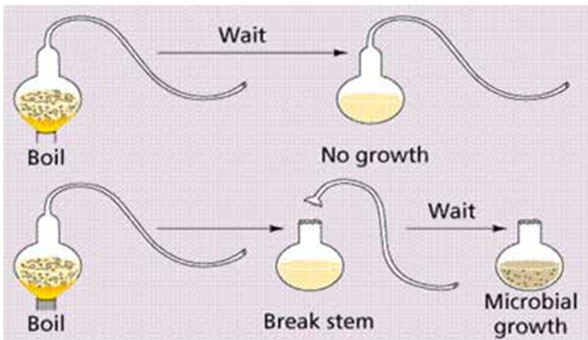
pánspermia-elmélet ➜ lényege?(1) "hibája"?(1)
- Földön kívül keletkezett az élet, pl. meteoriton keresztül jött ide
- "hiba" ➜ nem magyarázza az élet keletkezését
Oparin-elmélet ➜ lényege?(1mondatban) mit kell bizonyítani?
- az élő rendszerek élettelen kémiai anyagokból keletkezhettek a Földön ➜ abiogén úton (nem volt élő rendszerre szükség hozzá) jöttek létre
- mit kell bizonyítani? ➜ aminósavak létrejötte, nukleinsavak létrejötte ✽
§ aminosavak összeállítását proteinekké minden esetben nukleinsavak irányítják, így a legfontosabb kérdés az, hogy a nukleinsavak miként jöttek létre
Miller-kísérlet ➜ mit igazol? lényege?
-
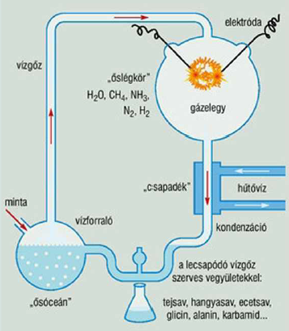
- igazolja, hogy aminosavak abiogén úton is létrejöhettek
- abiogén úton = éllettelen anyagokból jön létre természetes kémiai reakcióval (nincs szükség élő rendszerre hozzá)
- lényege ➜ bal alsó "ősóceán" lombik forralása + fölötte őslégköri gázok ➜ csövön eljutva elektródák elektromos kisülései (szimbolizálva villám stb.) hatnak rájuk ➜ 2hét után keletkeztek molekulák (aminosav)
- Oparin-elmélet "aminosav részét" bizonyítja
mi volt az első makromolekula?(LP)
- egyenlőre nem lehet biztosan tudni
- lehetett DNS vagy RNS vagy fehérje
§ jelenleg talán az RNS a legvalószínűbb
'RNS-világ hipotézis' ➜ alapja? lényege?
-
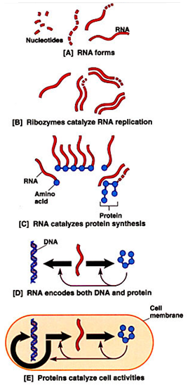
- RNS képes információt hordozni és enzimként működni (míg DNS csak előbbit, fehérje pedig utóbbit)
- a nukleotidok random polimerizációja ➜ ribozimok létrejötte
- szelekció hatására olyan ribozimok jöttek létre, melyek a kis fehérjék szintézisét katalizálták: majd az oligopeptidek RNS-sel képeztek komplexet ➜ első riboszóma ➜ fehérjeszintézis
- a proteinek jobb katalizátornak bizonyultak a ribozimoknál, ezért váltak domináló biopolimerré
- a nukleinsavakat genom célra használták a szervezetek inkább
––––––––
Kémiai evolúció, a légkör eredete.
légkör oxigén tartalma kezdetben?(1) első sejtek milyenek voltak?(2) légköt oxigénszint emelkedése?
- nem volt oxigén a levegőben
- első sejtek kemoheterotrófok voltak, azaz szénforrásuk(hetero) és enerigaforrásuk(kemo) szerves-vegyület lebontásából származott
- ezután jöttek a vizet felhasználva fotoszintetizáló sejtek (kb.3,5 milliárd éve) ➜ cianobaktériumok(kékalgák) lehettek az elsők ➜ O2 bekerült a légkörbe
- azonban O2 nem gyűlhetett össze a légkörben, míg a kőzetfelszínek nem szaturálódtak ➜ ~2 milliárd éve kezdődhetett a légköri O2 koncentráció növekedése
sejtmembrán létrejötte.
foszfolipidek felépítése?(alkotói!)
- 2zsírsav + glicerin + foszfát + nitrogéntartalmú vegyület(pl.kolin) 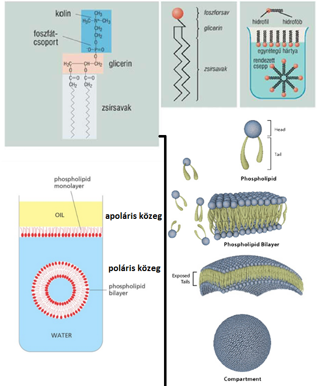
foszfolipidek miért alkalmasak membránalkotásra?
- farok részük apoláris ➜ két zsírsav része
- fej részük poláris ➜ ✽ glicerin+foszfát+N(pl.kolin) molekularészlet
- fej részük hidrofil(vízkedvelő,"vonzódik felé") / farok része hidrofób(víztaszító)
- poláris közegben(pl. víz) eldugják, egymás felé fordítják farok részük, fej részük pedig a víz felé fordul
~~~~~~~~~~~~~~~~~~~~~~~~~~~~~~~~~~~~
A pro- és az eukarióta sejt.
eukarióta sejt eredete ➜ elmélet neve, mely magyarázza? kinek a nevéhez fűződik?
- endoszimbionta-elmélet
- Lynn Margulis
endoszimbionta-elmélet lépései?(6)
- heterotróf prokarióta sejtek számára előny a nagy méret
- így idővel megnőttek
- közben elvesztették sejtfalukat
- betüremkedések is közben egyre nőttek (különben relatív felületük csökkent volna, és ez a környezettel való anyagcserét gátolná)
- betüremkedések leszakadtak belül és így kialakult ➜ ER, magmembrán, lizoszóma, Golgi
- emelett más prokarióták bekebelezésekor, néhánnyal szimbiózis alakult ki ➜ mitokondrium

endoszimbionta-elmélet bizonyítása mitokondrium példáján?(8)
- kettős membrán, ráadásul...
- külső_membránban akvaporinok
- belső_membránban elektronszállító rendszer
- mtDNS
- cirkuláris
- intronjuk szinte nincs
- hiszton & nukleoszóma nincs
- N-formilmetioninnal kezdődik a fehérje-szintézis
- osztódása ➜ hasadásra hasonlít, sejtétől független
mely molekula konzervált az összes sejtes életformában? mire bizonyíték?
- 16S rRNS (prokarióták 30S riboszóma-alegységének alkotója)
- archeák,prokarióták,eukarióták közös_őstől(LUCA) való származására 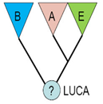
prokarióta vs eukarióta(nyisd meg!)
| prokarióta | eukarióta |
|---|---|
DNS?gyűrű alakú➜ ➜ ()kromoszómákat alkotnak
| |
sejtmag?nincs✽➜ ➜ kettős magmembránnal elválasztott sejtmag van
| |
osztódás?hasadás➜ ➜ mitózis / meiózis
| |
méret(általános)?~2μm✽➜ ➜ ~10μm✽
| |
belső membránrendszer?nincs, így sejtszervecske sincs➜ ➜ van, és sejtszervecske is
| |
kialakulásuk mikor?~4milliárd éve➜ ➜ ~2milliárd éve
| |
eukarióta génje a prokarióta/archea-val milyen kapcsolatban?
- eukaryota gének többsége a bakteriális homológiát mutat, kevés az archaea-homológ gén
- archaea-homológ gének az információ-feldolgozás fehérjéit kódolják (pl. transzláció, transzkripció és replikáció)
- baktérium-homológ gének többnyire alapműködéssel összefüggő fehérjéket kódolnak (pl. metabolikus enzimek, membrán transzporterek)
megjelenés alapján tedd sorrendbe ➜ mitokondrium, sejtváz, peroxiszóma
- előbb sejtváz, aztán peroxiszóma, végül mitokondrium
2. A sejtmembrán felépítése és működése.
sejtmembrán.
felépítésének alapja? fő alkotói?
- felépítésük ➜ kettős_lipidréteg
- kettős_lipidréteg alkotói
- lipidek
- fehérjék
foszfolipidek miért alkalmasak membránalkotásra?
- farok részük apoláris ➜ két zsírsav része
- fej részük poláris ➜ glicerin+foszfát+N(pl.kolin) molekularészlet
- fej részük hidrofil(vízkedvelő,"vonzódik felé") / farok része hidrofób(víztaszító)
- poláris közegben(pl. víz) eldugják, egymás felé fordítják farok részük, fej részük pedig a víz felé fordul
~~~~~~~~~~~~~~~~~~~~~~~~~~~~~~~~~~~~
zsírsav fő típusai foszfolipidekben?(3)
- palmitinsav
- sztearinsav
- olajsav
foszfolipidek felépítése?(alkotói!)
- 2zsírsav + glicerin + foszfát + nitrogéntartalmú vegyület(pl.kolin) 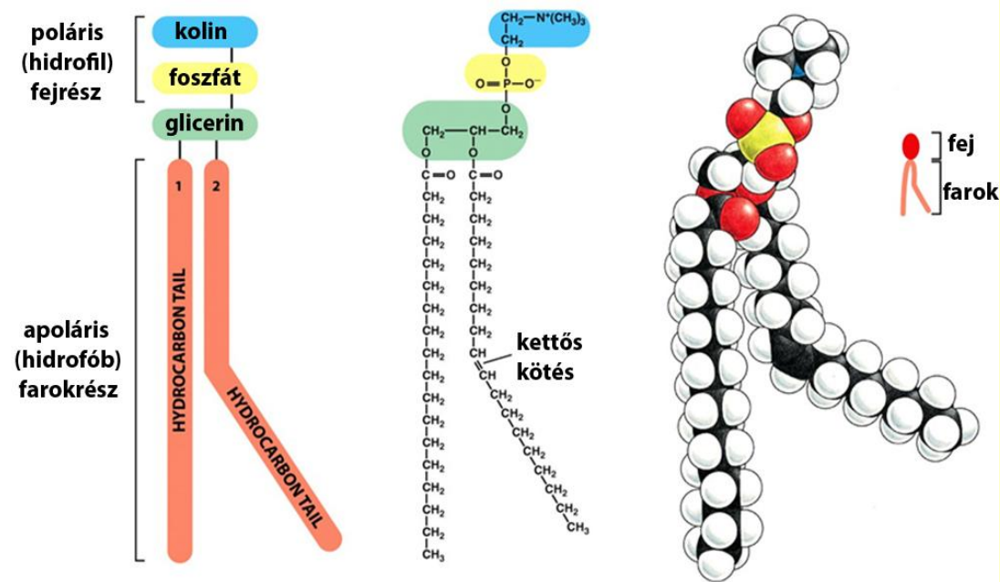
lipidkomponensek fő típusainak felsorolása?(3)
- foszfolipidek
- koleszterin
- glikolipidek
foszfolipidkomponensek fő típusainak felsorolása?(4)
- foszfatidil-kolin
- foszfatidil-szerin
- foszfatidil-etanolamin
- szfingomielin
koleszterin ➜ felépítése? elhelyezkedése? funkciója? mennyisége?
- felépítése
- apoláris ➜ szénhidrogén-rész + szteránváz ➜ foszfolipidek-farok részénél helyezkedik el
- poláris ➜ fej-rész ➜ foszfolipidek fej-részénél helyezkedik el
- szteránváz részével merevíti a membránt
- ~foszfolipidekkel azonos mennyiségben 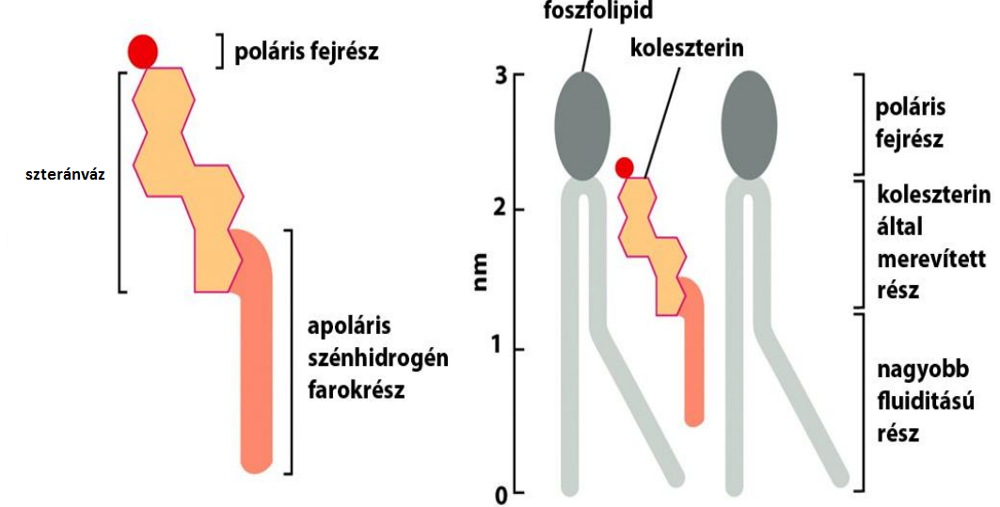
mi a raft?
- raft ➜ egyes részein vastagabb a membrán 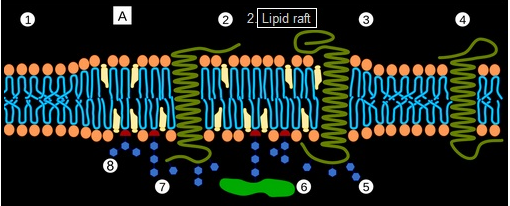
glikolipidek ➜ hol helyezkednek el? "miért?"
- külső_rétegben ➜ ugyanis ...
- glikolipid = lipid + hozzákapcsolódó szénhidrát-lánc
- szénhidrát-lánc pedig glikokalix alkotója 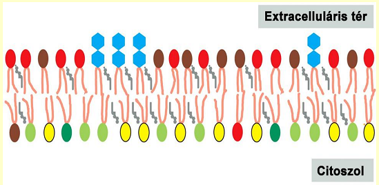
membránalkotók "mozgáslehetőségei"?
| mozgásforma | foszfolipid | membránfehérje |
|---|---|---|
| laterális diffúzió | képes | képes |
| rotáció | képes | képes |
| flexió | képes | képtelen |
| flip-flop | nagyon ritka () | képtelen |
membránfehérjék csoportosítása kapcsolódás alapján?
- integránsnak van apoláris része amivel mélyen kötődik a lipidrétegbe, perifériás csak felszínesen kötődik
- transzmembrán ➜ integráns, mely teljesen átér 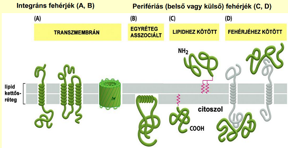
’Multidrog rezisztencia protein’ ➜ mi? funkció? előfordulásra pl?
glikokalix.
szinonima?
- sejtburok
szerkezete?
- szénhidrátban gazdag
- ugyanis kívülről szénhidrát-láncok kapcsolódnak a fehérjékhez(glikoprotein,proteoglikán) és lipidekhez(glikolipid) 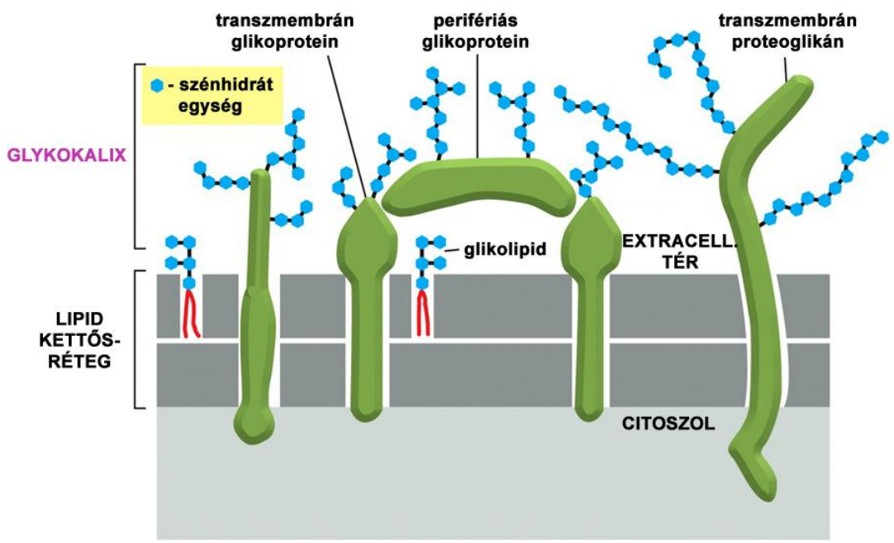
funkciója?
- mechanikai és kémiai védelmet nyújt
- sok vizet képes megkötni
IF
megoldás
1 (transzmembrán) glikoprotein
2 (perifériás) glikoprotein
3 (transzmembrán) proteoglikán
4 glikolipid
5 glikokalix
membrántranszport folyamatok.
"membránátjutás" lehetőségeinek felsorolása?
-
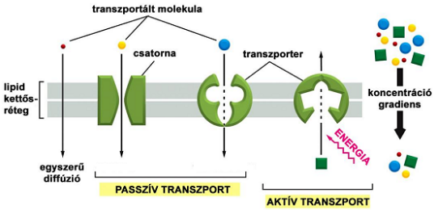
- egyszerű_diffúzió ➜ nincs
- facilitált_diffúzió ➜ csatornafehérje vagy transzporter-fehérje
- aktív_transzport ➜ transzporter-fehérje (=)
- egyszerű_diffúzió ➜ nagyobbtól kisebb koncentráció fele
- facilitált_diffúzió ➜ nagyobbtól kisebb koncentráció fele ✽
- aktív_transzport ➜ kisebbtől nagyobb koncentrációjú fele
- egyszerű_diffúzió ➜ koncentrációkiegyenlítődés
- facilitált_diffúzió ➜ koncentrációkiegyenlítődés +/- töltéskiegyenlítődés
- aktív_transzport ➜ ATP közvetlenül vagy közvetve
- egyszerűnél ionok nem juthatnak át, facilitáltnál igen
- az, hogy elméletben a töltéskiegyenlítődés mind segítheti, mind gátolhatja a transzportot
- segítheti pl ➜ van 10000db A+ molekula kinnt, és 1db A+ bennt ➜ befele megy az A+ szállítása hisz töltéskül. és koncentrációkül. is azt diktálja
- gátolhatja pl ➜ van 10000db A+ és 10000db B- kinnt, és 1db A+ bennt ➜ csak A+ transzportja engedélyezett ➜ nyilván befele megy az A szállítása hisz koncentrációkül nagyon ezt diktálja, de itt a töltéskül. ellene szól
- problémám, hogy nincs konkrét példám ezekre, hogy milyen lehet (illetve az se világos, hogy csatorna és transzporter esetében is vannak-e ilyenek)
| egyszerű_diffúzió | transzport | |
|---|---|---|
| passzív = facilitált_diffúzió | aktív | |
transzportfehérje? !! | ||
nagyobb / kisebb koncentrációjú térbe megy a szállítandó? | ||
energiáját mi fedezi? | ||
töltéskiegyenlítődés egyszerű/facilitált diffúziónál miért van/nincs?
(töltéskiegyenlítődés facilitáltnál mi a gondom?)
egyszerű diffúzióval mik jutnak át és mik nem?
- átjutnak ➜ apoláros molekulák oxigén & lipid + kis poláros molekulák H2O & CO2
- nem jutnak át ➜ ionok + nagy poláros molekulák
különbség a facilitált és egyszerű diffúzió között?(2)(LP)
-
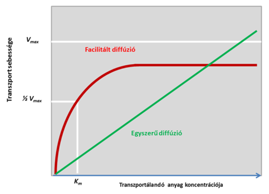
- transzmembránfehérjét igényel a facilitált
- egyszerű sebessége arányos a transzportálódó anyag koncenátrációjával, míg faciláltnál a "kémián enzimeknél tanult fv." van
transzportfehérjék típusainak felsorolása?
| transzportfehérjék !!!!!!!!! | |
|---|---|
| csatorna | karrier (hordozó,transzporter) |
kötés az átjutó anyag és transzportfehérje között...nem jön létre ||||||||||||| létrejön | |
átjuttatás módja?fehérje belsejében lévő csatornán diffúzióval átjut az anyag ||||||||||||| membrán másik oldalára "átpumpálja és elengedi" | |
transzportfehérje szerkezetével mi történik?nem változik meg ||||||||||||| megváltozik a folyamat során | |
folyamat sebessége?gyorsabb ||||||||||||| lassabb | |
milyen transzportra képes(passzív/aktív)?csak passzív ||||||||||||| passzív / aktív | |
1pl szekunder_aktív transzportra?
- pl. glükóz felszívás bélhámsejtekben
- (azért nem facilitált, mert a glükóz a nagyobb koncentráció irányába megy, hiába passzív a lépés maga)
2pl primer_aktív transzportra?
- pl. Na-K-ATP-áz
- pl. proton-pumpa ➜ mitokondrium elektrontranszport rendszerében, illetve lizoszómákban ✽
bélhámsejtek "glükóz-felszívó mechanizmusának" bemutatása?(6) KÉP!
- Na-K-ATP-áz a sejt bazális oldalán kipumpál 3Na+ és közben beenged 2K+ a sejtbe ➜ 1ATP fedezi!
- ennek következtében csökken az Na+ és a töltés a sejtben
- a glükóz-Na+ transzporter felhasználja az előbbit, és Na+ szimportál glükózzal a setjbe
- glükóz koncentrációja ugyan nagyobb, a sejtben, de az Na+-é kisebb
- Na-K esetében primer_aktív transzport volt
- glükóz-Na+ esetében pedig szekunder_aktív transzport volt
(tehét szekundernél egy másik részecske koncentrációkiegyenlítődése fedezte az energiát, de lehet töltés is gondolom, sőt az is lehet itt volt az is, ki tudja...)
csatorna-fehérjékre 2pl?
- akvaporinok
- ioncsatornák
ioncsatornák szabályozásának módjai?(3)
- feszültség-változás ➜ pl. Na+- és K+- és Ca2+-csatornák működését szabályozzák
- ligand ➜ pl. neurotranszmitter (pl. acetilkolin, glicin, γ-aminovajsav, IP3)
- mechanikai hatás
zárt állapotban vannak alapvetően ➜ szignál hatására nyílnak, a szignál lehet:
ioncsatornákra a részleges szelektivitás jellemző ➜ mit jelent? igaz v hamis?(LP)
- azonos méretű és töltésű ion között nem tesz különbséget
- igaz
csatornafehérjék működését csak a koncentrációkülönbség határozza meg ➜ igaz v hamis?
- hamis, mert a töltéskülönbség is befolyásolja
csatornafehérjék működése energiaigényes? miért?
- nem (sejt részéről mármint) ➜ töltés- és koncentrációkiegyenlítődés fedezi az energiát
primer/szekunder aktív transzport mi?
- primer ➜ energiaszükségletet közvetlenül fedezi ATP
- szekunder ➜ energiaszükségletet közvetve fedezi ATP ➜ lásd "bélhámsejtek-kérdés"
aktív-transzport csoportosítása "molekulaszállítás-alapján"?
- uniport ➜ 1féle
- kotranszport ➜ 2féle
- szimport ➜ 1irányba
- antiport ➜ ellentétes irányba
Na-K ➜ milyen transzport?
- ATP fedezi energiát ➜ primer aktív-transzport
- antiport ➜ 3Na-t sejtből kipumpálja / 2K-t bepumpálja sejtbe a kerrier-fehérje
vízpórusok.
szinonima?
- akvaporinok
mik?
- csatorna-fehérjék ➜ 6szor érik át a membránt
csoportosításuk?
- csak vizet enged át
- pár egyéb dolgot is (pl.glicerin,urea)
3. A sejtmag felépítése és működése.
sejtmag
sejtmag latinul?
- nucleus
sejtmag evolúciójának elmélete?
- a plazmamembránon betüremkedések keletkeztek, majd ezek leszakadva elváltak a plazmamembrántól
- ezért az eukarióták nucleusa, már kettős-membránnal elválasztott a citoplazmától 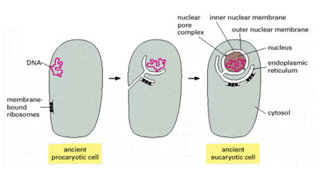
prokarióták sejtmagjának szerkezete?
- nincs sejtmagjuk ✽ ➜ gyűrű-alakú DNS ott van a citoplazmában
"betüremkedés-leszakadás" ➜ mik jöttek így létre?(4)
- magmembrán, ER, lizoszóma, Golgi
sejtmag fő folyamatai, funkciói?
- transzkripció
- replikáció
- magtranszport !?
sejtmag felosztása?(17)
- magmembrán
- nukleoplazma
- nucleolus
- pars_amorpha
- pars_fibrosa
- pars_granulosa
- kromatin
- eukromatin
- heterokromatin
- konstitútív
- fakultatív
- interkromatin
- nukleoszol
➜ víz, stb. ➜ folyadékállomány
- nukleáris_mátrix
- nukleoszkeleton = ➜ ez adja a vázat
- lamina_fibrosa
- intranukleáris_filamentumok
- (nukleáris testek)
- (makromolekuláris testek)
sejtmagot milyen molekulák alkotják és milyen arányban?(pl. szénhidrátok 1:2 fehérjék)
- DNS 50% : 50% fehérjék
génexpresszió mi?
- adott gén "transzkripciója és transzlációja együtt"
magmembrán
JR magmembrán alapfelépítése
- kettős membrán alkotja, köztük perinukleáris tér
- külső/belső rétegnek eltérő komponensei vannak, így szerkezetük és funkciójuk is más
- nem folyamatos a kettős membrán ➜ magpórusok szakítják meg
külső/belső réteg komponensei megegyeznek, így szerkezetük és funkciójuk is ➜ igaz v hamis?
- h-h ➜ komponenseik, így szerkezetük és funkciójuk is eltérő
perinukleáris tér ➜ mi? mit tudjak róla?
- két membrán közti tér
- ER-el folytonos 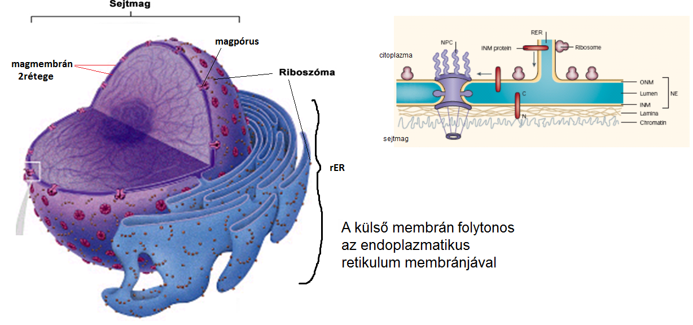
kettős membrán hány lipidréteg?
- 4
külső magmembrán ➜ felépítése? funkciója?
- riboszómák vannak rajta
- ER-el folyamatos (➜ perinukleáris tér is az ER-el✽)
- funkció ➜ magmembrán fehérjéinek szintézise
belső magmembrán funkciója?
- lamina_fibrosa(=)-val van kapcsolatban ➜ ezen keresztül kötődik a kromatinhoz (nem közvetlenül) 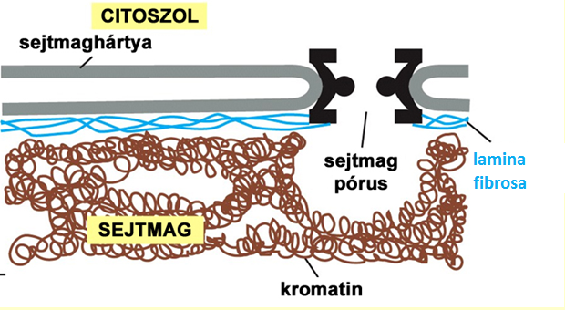
magpórusok száma/sejtmag?
- 2000-3000db
magpórust alkotó molekulák?
- nukleoporinok alkotják (kb. ~30féle fehérje)
magpórus szerkezete?
- 8alegységből épül fel, középen centralis_csatorna
- láthatók rajta még fibrillumok (mind2 oldalt) és kosár (mag felőli oldalon) 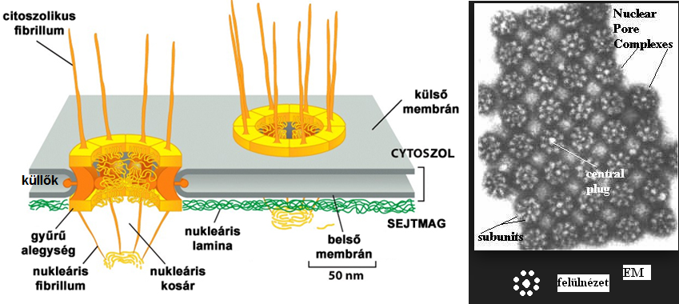
magpórus 8alegységén mik juthatnak át és hogy?(LP)
- ionok,kismolekulák,monomerek diffúzióval
nukleoszkeleton
interkromatin felosztása?
- nukleoszol
➜ víz, stb. ➜ folyadékállomány
- nukleáris_mátrix
- nukleoszkeleton = ➜ ez adja a vázat
- lamina_fibrosa
- intranukleáris_filamentumok
- (nukleáris testek)
- (makromolekuláris testek)
nukleoszkeleton ➜ felosztása? mi alapján? KÉP
- lamina_fibrosa ➜ belső magmembránhoz kapcsolódva
- intranukleáris_filamentumok ➜ mag belsejében van
lamina_fibrosa ➜ milyen típusú váz? alkotói és azok funkciói? KÉP
- lamin A/C ➜ kromatinhoz kapcsolja
- lamin B ➜ belső_magmembránhoz kapcsolja
intermedier_filamentum ➜ alkotói a lamin nevű fehérjék
lamina_fibrosa funkció?(2)
- belső_magmembránt kapcsolja kromatinhoz
- magmembrán integritását biztosítja
- sejtosztódás elején a laminok foszforilációja megy végbe ➜ magmembrán szétesik vezikulumokra
- sejtosztódás végén azonban defoszforilációval összeáll ismét a magmembrán
kromatin
definíciója? mi alkotja?
- interfázisos (sejciklusban) kromoszóma ➜ DNS + hozzá kapcsolódó fehérjék
kromoszóma "felosztása" fázisonként?
- interfázisos_kromoszóma ➜ interfázisban (sejtciklus)
- metafázisos_kromoszóma ➜ mitózisban (sejtciklus)
alap felosztása?(2) ➜ funkció/szerkezet/EM képen?
| eukromatin | heterokromatin | |
|---|---|---|
| funkció | aktív ➜ transzkripciót végez | inaktív ➜ nincs transzkripcó |
| szerkezete | laza | tömör(feltekeredett) |
| EM képen | világos | sötét |
heterokromatin ➜ típusai? jellemzésük (1szóval)?
- konstitutív ➜ transzkripció sosincs
- fakultatív ➜ ingerre átalakulhat eukromatinná !?
- ezenkívül perinukleáris_heterokromatin ➜ lamina_nuclearishoz kapcsolódva található
- ha terhes a nő, akkor a tejmirigyek elkezdenek tejfehérjét termelni
- oka ➜ fakultatív_heterokromatin átalakul eukromatinná, terhesség után pedig visszaalakulnak
- férfiakban ez azonban mindvégig konstitutív
~~~~~~~~~~~~~~~~~~
konstitútív & fakultatív szemléltetése 1pl-án?
JR kromoszómák helye interfázis során
-
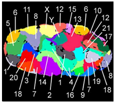
- minden kromoszóma specifikus helyet (nem random) foglal el a sejtmagban interfázisban is (kromatin formában)
sejtmag fehérjéinek csoportosítása?
- hiszton
- non-hiszton
- vázalkotó fehérjék (scaffold-proteinek)
- kromatin szerkezetét módosító fehérjék
- génreguláló_fehérjék (=speciális_transzkripciós_faktorok) ✽
DNS szerveződés = kromatin kondenzálódás
kromatint hány DNS alkotja? ()
- diploid sejt esetében 46db (1/kromoszóma)
- haploid sejt (ivarsejt) esetében csak 23db (1/kromoszóma)
mi a feladat? (DNS-hossz vs kromoszóma-hossz)
- 23db DNS együttes hossza 2m ➜ ezt kell elhelyezni ~10μm átmérőjű sejtben
kromoszóma alapegységének neve?
- nukleoszóma
- /az eukromatin esetében is már nukleoszómára tekeredett a DNS! ➜ tehát kromatin alapegysége is/ ➜ ezt majd valahova elteszem
nukleoszóma ➜ felépítése? régiói?
- nukleoszóma áll 8db hisztonból ➜ H2A H2B H3 H4, mindegyikből 2db
- nukleoszómára a DNS 2x tekeredik fel
- DNS 2 régiója
- linker régió ➜ ~60 bázispár hosszú
- nukleoszómán lévő rész ➜ ~146-147 bázispár hosszú

hiszton fehérjék ➜ felsorolás & funkció?
- H2A H2B H3 H4 ➜ nukleoszómákat alkotják
- H1 ➜ nukleoszómákat kapcsolják össze ➜ kialakul a kromatin-szál = szolenoid (30nm átmérőjú)

"DNS-ből kromoszómába útvonal első 3 lépcsőfoka"?
- DNS
- kromatin-filamentum ➜ nikleoszómák
- kromatin-szál = szolenoid ➜ nikleoszómák + H1
hiszton módosítások
hol történnek?
-
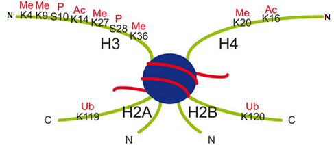
- nukleoszómát alkotó hisztonoknak van 1-1 "kilógó része"
- NH2-re végződnek
- 20-35aminosavból állnak és lizin(K) + arginin(R)ben gazdagok)
- ezen részek aminosavjaival történnek a módosítások
- (ezenkívül a H2A és H2B-nek van 1-1 C-re végződő kilógó része is)
módosítások típusainak felsorolása?
- acetiláció és deacetiláció
- metiláció
- foszforiláció
- ✽
/// módosítások mindegyike "kovalens-kötésű"
(de)acetiláció ➜ mi történik? funkció?
- acetiláció
- acetilcsoport -COCH3 adódik Klizin vagy Rarginin aminósavhoz
- funkció ➜ aktiválja az adott DNS-részt (tehát lefűzi) ➜ transzkripcióhoz kell
- deacetiláció pont az ellentetjét váltja ki ➜ kromatin kondenzálódik (visszafűződik) ➜ sejtosztódáshoz kell
- Képet a kromatin lefűződés, kondenzálódásról 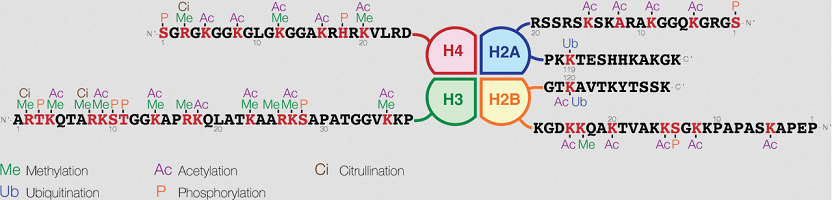
metiláció ➜ mi történik? funkció?
- metilcsoport -CH3 adódik Klizin vagy Rarginin aminósavhoz
- funkció ➜ inaktívvá teszi a DNS-azon részét
foszforiláció ➜ mi történik? funkció?(LP)
- foszfátcsoport adódik Sszerin vagy Ttreonin aminósavhoz
- funkció ➜ kromatin átrendeződésben fontos
nucleolus
membránjának szerkezete?
- nincs membránja
szerkezete ➜ funkció?
- felismerni NEM kell tudni őket!
| rész neve | rész funkció |
|---|---|
| A pars_amorpha | 45S pre_rRNS-szintézis |
| PF pars_fibrosa | pre_rRNS-átalakítás ➜ 1db 45S rRNS lebomlik 3db kisebb rRNS-re |
| PG pars_granulosa | 40S és 60S riboszóma_alegységet készít a következőképpen ➜ 3db kisebb rRNS-hez hozzákapcsolja a szabad_riboszómákban szintetizálódott majd beérkezett fehérjéket |

funkciói?(2)
- 2db riboszóma_alegység-szintézis
- rRNS-t szintetizál
- majd az itt szintetizált rRNS-t a kaputranszporttal beérkezett fehérjékkel "kombinálja"
- telomeráz(enzim)-szintézis
NOR micsoda?
- sejtciklus során interfázisban 3 része van a nucleolusnak ➜ pars amorpha / fibrosa / granulosa
- prometaphaseben nucleolus megszűnik ➜ rDNS-ek feltekerednek 5 kromoszómára
- NOR [Nucleolus organizer region] ➜ 5 kromoszóma azon része ahova feltekeredett a nucleolus
- tehát lényegében a nucleolus = interfázisos NOR
mely kromoszóma tartalmaz NORt?
- 13,14,15,21,22
kaputranszport
mik áramolnak ki/be és hol?
- centralis csatornán át...
- fehérjék/RNS ki citoplazmába
- fehérjék be nucleusba
funkció?
- biztosítja, a citoplazma és nucleus eltérő makromolekuláris szerkezetét (szabályozott transzport)
résztvevők felsorolása?(4)
- transzportált molekula
- átjuttatják a cargot a magpóruson (transzporter-fehérjék)
- magpórus alkotó fehérjék
- transzportot szabályozó fehérje
cargo ➜ mi?
karrierek ➜ mik?
nukleoporinok ➜ mik?
Ran ➜ mi?
szignál ➜ definíció? mikor hol? mikor milyen?
- import esetében ➜ cargo csak fehérje lehet, rajta NLS-szignál, transzporteren a receptor
- export esetében
- ha a cargo fehérje, rajta NES-szignál, transzporteren a receptor
- ha a cargo RNS, akkor a kísérő fehérjéken van NES-szignál
szignál ➜ jel, melyet a receptor felismer és megköt
import/export ➜ lépései? különbség?
- 1 cargo + transzporter (+Ran-GTP exportnál) összekapcsolódik
- 2 átmennek a magpóruson
- 3 disszociálnak
- 4 transzporter(+Ran-GTP importnál) visszamegy a magpóruson
- ---------------
- Ran-GTP mindig a sejtmagban kötődik a cargo+transzport komplexhez
- Ran-GTP mindig a citoszolba érve hidrolizál Ran-GDP-re 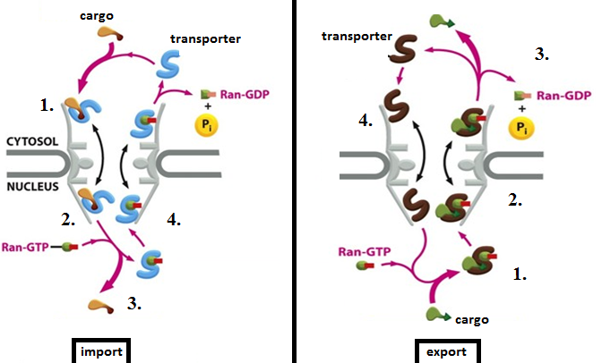
export és import energiaigényessége?
- export energiaigényes (!?)
transzkripció
RNS-ek ➜ típusai?(4) funkciójuk? ✽
- mRNS (messanger) ➜ kódot az aminosav-sorrendről szállítja a transzlációhoz(riboszóma)
- tRNS (transfer) ➜ aminosavakat szállítja transzlációhoz(riboszóma)
- rRNS (ribosomal) ➜ riboszóma két alegységének alkotója
- snRNS ("sznörpök") ➜ splicingban vesznek részt
- ((vannak egyép típusai, lásd Darvas37 + kép))
transzkripció lépéseinek felsorolása?
- iniciáció(lánckezdés)
- elongáció(láncnövekedés)
- termináció(befejezés)
transzlációé ugyanezek
prokarióta és eukarióta transzkripció közti eltérések? ✽
| prokarióta | eukarióta |
|---|---|
| mind3 fajta RNS-szintézist ugyanazon típusú RNS-polimeráz enzim végzi |
# RNS-polimeráz I ➜ rRNS-szintézist végzi
# RNS-polimeráz II ➜ mRNS-szintézist végzi
# RNS-polimeráz III ➜ tRNS-szintézist végzi
|
| átírás során képződött RNS már nem fog változni, hanem megegyezik a végleges formájával (rRNS/tRNS/mRNS) | átírás során képződött pre_RNS (pre rRNS / pre mRNS / pre tRNS) még átalakításon megy át |
(eukarióta) képződő RNS-molekulához egyből kapcsolódó fehérjék (2+1) ➜ típusai? funkciójuk?
- snRNP = snurps("sznörpök")
- alkotói ➜ fehérjék + snRNS
- intronok kivágásában játszanak szerepet
- kísérő fehérjék ➜ átalakított_RNS-t viszik magpórushoz, és a export-kaputranszportban részt vesznek
- (hnRNP ➜ pre_RNS-t stabilizálják, átalakítják és szállítják)
transzkripció milyen irányba zajlik?
- 5' ➜ 3'
transzkripciót mik végzik?
- transzkriptoszómák ➜ RNS-polimeráz ✽ + egyéb TF-ek
transzkripciós-faktorok típusai és funkciójuk?(2)
- általános_transzkripciós_faktorok ➜ melyek az RNS-polimeráz II enzim működéséhez szükségesek
- speciális_transzkripciós_faktorok ➜ egyéb specifikus dologhoz szükségesek
--------------
§ génreguláló-fehérjékbe tartoznak
§ transzkriptoszóma alkotói (RNS polimeráz mellett)
rRNS-transzkripció lépései?
- felismerni NEM kell tudni őket!
| rész neve | rész funkció |
|---|---|
| A pars_amorpha | 45S pre_rRNS-szintézis |
| PF pars_fibrosa | pre_rRNS-átalakítás ➜ 1db 45S rRNS lebomlik 3db kisebb rRNS-re |
| PG pars_granulosa | 40S és 60S riboszóma_alegységet készít a következőképpen ➜ 3db kisebb rRNS-hez hozzákapcsolja a szabad_riboszómákban szintetizálódott majd beérkezett fehérjéket |
mRNS-transzkripció során az RNS-polimeráz II hova kötődik?
- promoter régióban lévő TATA-boxhoz 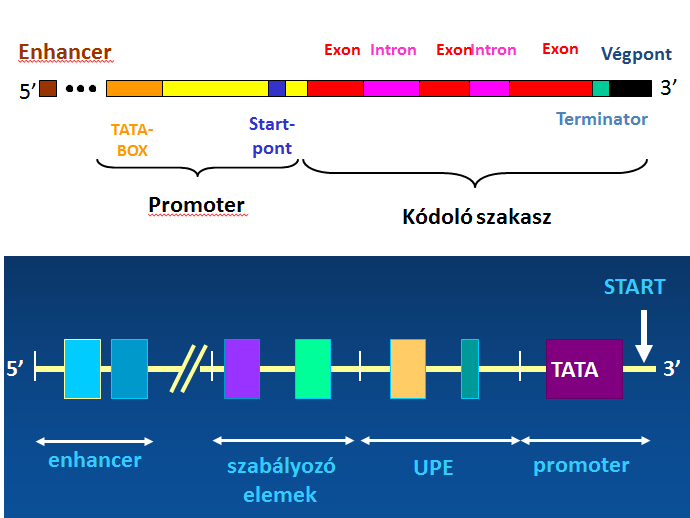
pre_mRNS érés
lépéseinek felsorolása?
- capping ("sapkaképzés")
- poliadeniláció ("poliA farokképzés")
- splicing ("kivágás")
capping ➜ lényege, mikor?
- transzkripció megkezdése után kicsivel, a képződő pre_mRNS 5'végén képződik egy "sapka"
- (lépései)
- egy foszfatáz(enzim) eltávolítja a pre_mRNS 5' végén lévő foszfátcsoportot
- guanil-transzferáz(enzim) ➜ guanin-monofoszfátot tesz előbbi helyére
- metil-transzferáz(enzim) ➜ metilcsoportot tesz a guanin-monofoszfáthoz
capping funkciója?
- transzláció kezdeti lépéseihez kell
mikor történnek ➜ capping / poliA-farokképzés / splicing?
- ko-transzkripcionális ➜ pre_mRNS-szintézis közben
- capping ✽
- splicing
- poszt-transzkripcionális ➜ pre_mRNS-szintézis befejezése után
- poliA-farokképzés
poliadeniláció ➜ mikor? folyamat lényege?(1-1mondat)
- poszt-transzkripciós ➜ akkor történik, mikor a pre_mRNS-szintézis befejeződött
- ekkor egy poliA-polimeráz enzim hozzákapcsol a pre_mRNS 3' végéhez egy 200adenin-tartalmú poliA-tail nevű nukleotidot
poliA funkciója?
- riboszóma számára felismerő szignál
- (mRNS transzportját segíti)
- (mRNS stabilitását segíti)
splicing lényege?
- pre_mRNS még tartalmaz exonokat és intronokat is
- splicing során intronok kivágodnak ➜ átalakított_mRNS már csak exonokat tartalmaz
- exon ➜ fehérjét kódoló modul(kisebb egység)
- intron ➜ fehérjét NEM kódoló modul (általában hosszabb)
––––––––––––––––––––––––––––––––––––––––––––––––––––––––––––––––
splicing lépései?
- intron két végéhez kapcsolódnak sznörpök
- egymás felé közelítenek
- a pre_mRNS 5' vége felé lévő intron_véghez GU kapcsolódott sznörp elvágja az exon/intron határt
- elhasított szál az intron 3' végén lévő Adeninhez kapcsolódik
- a pre_mRNS 3' végénél felé lévő intron_véghez AG kapcsolódott sznörp elvágja az exon/intron határt
- 2 exon összakapcsolódik
- intron összakapcsolódik 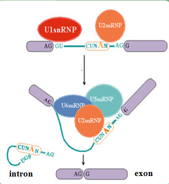
alternatív_splicing ➜ lényege? következménye?
- alternatív_splicing ➜ intron kivágódás többféleképp is végbemehet
- ez nem feltétlen hiba ➜ pl. N-CAM (sejtadhéziós molekula) esetében kb.20 féle fehérje képződhet
- de hibát is okozhat ➜ splicing_mutáció, ez lehet az oka pl. thalassaemia (vvt nemjól képződik) betegségnek
- következménye ➜ hozzájárul ahhoz, hogy egy sejtben expresszálódó fehérjék száma jóval meghaladja a gének számát
thalassaemia ➜ lényege? oka feltételezhetően?
- vvt nemjól képződik
- oka feltételezhetően a splicing_mutáció(alternatív_splicing hibát okoz)
Cajal-testek mik?
- intekromatinban lévő makromolekula-halmazok
- tartalmaznak
- TF-eket
- sznörpöket
- reguláló molekulákat
4. A génműködés szabályozása.
génműködés szabályozása
szabályozási szintek felsorolása?
- transzkripciós
- poszt-transzkripciós = pre_mRNS-érés szabályozás
- transzlációs
- poszt-transzlációs = fehérje módosítás
gén definíció?
- fehérjét kódoló DNS-szakasz
poszt-transzkripciós_szabályozás(mRNS) ➜ 2pl?
- csak az érett_mRNS (poliA-farok + sapkával rendelkező) jut el magpórushoz, és azon át
- kísérő fehérje jelenléte, hisz azon van a NES szignál
- poliA-farok és a 2 végén elhelyezkedő citoplazmatikus_faktorok
1.pl poliadeniláció
2.pl mikroRNS és/vagy siRNS lebontja/elcsendesíti az mRNS-t
mRNS magpóruson átjutásának feltételei?(2)
mRNS életidejét mi szabja meg?
DURVA transzkripciós_szabályozás lényege eukariótában?
- hiszton acetiláció ➜ kromatin fellazítása ➜ serkenti a transzkripciót
- hiszton deacetiláció ➜ kromatin visszafűzése ➜ gátolja transzkripciót
transzkripciós_szabályozás típusai prokariótában és eukariótákban?
| prokarióta | eukarióta | |
|---|---|---|
| durva | nincs (hiszen nincs kromatinja) | van |
| finom | van | van |
finom_transzkripciós_szabályozásban a két fő különbség prokarióta és eukarióta között?
| prokarióta | eukarióta |
|---|---|
|
✽ policisztronos_mRNS (több gént tartalmaz) képződik ➜ szabályozása több fehérjére van hatással
---------------------
✽ pre_mRNS-érés nincs (sapka,poliA,splicing)
|
✽ monocisztronos_mRNS (1gént tartalmaz) képződik ➜ szabályozása 1 fehérjére van hatással
---------------------
✽ pre_mRNS-érés van (sapka,poliA,splicing)
|
prokarióta finom_transzkripciós_szabályozás típusainak felsorolása és lényegük?
- típusai ➜ negatív és pozitív
- negatív
- alapja ➜ operátor-hoz kötődve a génreguláló_fehérje✽ gátolja transzkripció megkezdését ➜ ha leválik, a transzkripció megindul
- pozitív
- alapja ➜ operátor-hoz kötődve a génreguláló_fehérje✽ serkenti a transzkripciót ➜ ha leválik a transzkripció abbamarad
- KÉP/VIDEÓ keressek
✽ génreguláló_fehérjéhez ha ligandum kapcsolódik, leválik az operátorról
✽ génreguláló_fehérjén alapból ott a ligandum, és ha külön válnak, akkor válik le operátorról
✽ génreguláló_fehérjéhez ha ligandum kapcsolódik, leválik az operátorról
✽ génreguláló_fehérjén alapból ott a ligandum, és ha külön válnak, akkor válik le operátorról
eukarióta finom_transzkripciós_szabályozása
résztvevők csoportosítása?
- cisz-elemek = génszabályozó-régiók ➜ DNS része(szekvencia), melyhez transzkripciós-faktorok és génreguláló-fehérjék kötődnek majd
- transz-elemek = génreguláló_fehérjék
cisz-elemekre 3pl?
- promoter-régió és TATA-box
- enchancer-régió
- silencer-régió 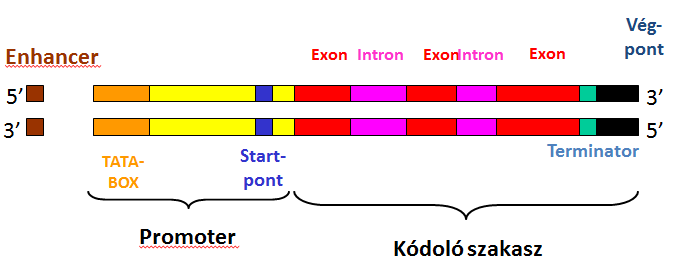
TATA-box jelentősége?(2)
- RNS-polimeráz II ide kötődik
- szabályozza a génműködést (gátlás/fokozás) ✽
enhancer és silencer szerepe?
génreguláló-fehérjék ➜ mik? típusaik?
- szabályozzák a génműködést (gátlás/fokozás)
- transzkripciós-faktorok
- aktivárorok ➜ fokozzák transzkripciót
- represszorok ➜ gátolják transzkripciót
--------------
alap transzkripcióhoz szükséges elemek?(3)
- TATA ➜ + általános_TF-ek + RNS-polimeráz II
- UPE (upstream promote elements) 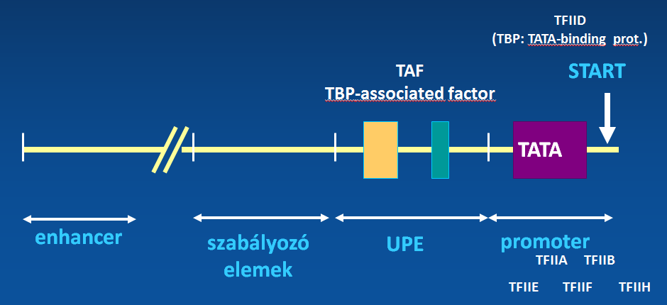
5. Az endoplazmatikus retikulum.
endoplazmatikus retikulum
sER funkciói?(6)
| általános | speciális |
|---|---|
|
# foszfolipid-szintézis
# lipid-szintézis ➜ pl. koleszterin (májban különösen intenzív)
# Ca2+ tárolás ➜ harántcsíkolt izomban különösen intenzív!!!!
|
# szteroid-szintézis (mellékvesében,herékben,petefészekben)
# "méregtelenítés" (májban)
# glükóz-6-foszfát "lebontása" glükózzá + foszfátionná (májban)
|
sER hogyan "méregtelenít"? "rizikó"?
- membránra veszélyes apoláros anyagokat (pl.gyógyszer) polárossá alakítja
- fennáll a veszélye, hogy mutagén(mutációt okozó)/karcinogén(rákkeltő) anyagot hoznak létre helyette
glükóz-6-foszfát "lebontása" glükózzá?
- sER membránjában lévő glükóz-6-transzporteren keresztül bejut a glükóz-6-foszfát
- sER lumenében lévő glükóz-6-foszfatáz lehasítja a foszfátion, és így marad 1 glükóz + 1 foszfátion
- (glükóz végül kimegy citoszolba egy másik transzporteren facilitált_diffúzióval, majd onnan a vérbe jut)
- ez a folyamat egy lépése annak a folyamatnak, mikor a májban raktározott glikogén lebontódik glükózzá, hogy a vércsukorszint állandó legyen
- von Gierke-betegség
- autoszomális_recesszív öröklődésű
- gükóz-6-foszfát-transzporter hiány ➜ nem tudja lebontani a glikogént glükózzá
antibiotikumok működésének alapja?(1)
- gátolják a prokarióták transzlációját
riboszóma
milyen típusú molekulák alkotják?
- rRNS + fehérje
szintézise hol zajlik?
- nucleolusban
- (de! az őket alkotó fehérjék szabad_riboszómában szintetizálódnak, majd onnan mennek be nucleolus, és 3kis rRNS-el egyesülve hozzák létre 40S és 60S)
szerkezete?
- alapvetően 2db alegység formában találhatók a citoszolban ➜ 40S + 60S
- transzláció megkezdésekor egyesülnek riboszómává = 80S (ez lehet szabad vagy rER-hez kötött)

transzláció
megkezdéséhez mik szükségesek?(3)
- riboszóma
- mRNS
- tRNS
(elég megjegyezni hogy a 3fő RNS fajta, és onnan már easy!)
nukleobázisok csoportosítása?
- purin ➜ adenin, guanin
- pirimidin ➜ citozin, timin/uracil
RNS-ben van uracil, DNS-ben timin
bázispárok?
- adenin - timin/uracil
- gunanin - citozin
RNS-ben van uracil, DNS-ben timin
tRNS szerkezete?
- 3' végén van a mindig CCA-ra végződő aminósav-kötőhely
- másodlagos-szerkezetének alakját jegyezzem meg
- amelyik oldalon fentebb van a hurok(+van egy "minihurok" alatta), az a riboszóma-kötőhely, másik oldalon pedig az enzim-kötőhely
- alsó hurok az antikodon rész ➜ azzal kapcsolódik mRNS
- harmadlagos-szerkezete L-alakú ➜ felül aminósav-kötőhelyre végződik, alul antikodonra 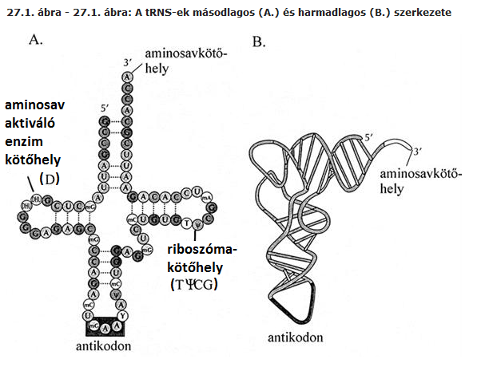
ezeket tudjam:
transzláció lépéseinek felsorolása?
- iniciáció(lánckezdés)
- elongáció(láncnövekedés)
- termináció(befejezés)
transzkripcióé ugyanezek
iniciáció lényege?
- 40S alegység P-helyéhez kötődik metionin(aminósav) !?
- így csatlakozik az mRNS-en lévő START-kodonhoz(AUG)
- 60S is csatlakozik
termináció lényege?
- STOP-kodonhoz✽ érve az A-helyre érkezik a release_faktor(fehérje)
- release_faktor hatására a P-helyen lévő tRNS elengedi az aminósavat(így a fehérjét)
- a riboszóma is a 2db alegységére szétesve elválik az mRNS-től
"rER-riboszóma" ✽ transzláció lépései?
- kezdeti lépés ugyanaz mint a riboszómánál
- de mikor megkezdött a fehérjeszintézis, megérkezik az SRP(GTP), és felismeri a szignál-szekvenciát a képződő fehérjén
- hozzákapcsolódik és a szintézis_szünetel, majd a rER-hez viszi
- a rER-en lévő SRP(GTP)-receptorhoz kötődnek
- 2GTP átalakul 2GDP + SRP leválik + szintézis_folytatódik
- szintézis során a transzlokon nevű csatornán bemegy a képződő fehérje
- innen kétféleképp alakulhat sorsa
- ha nem membránfehérje-szintetizálódik, akkor a szignál-peptidáz a szignál-szekvenciát levágja a fehérjéről ➜ a végén a fehérje az ER-lumenébe kerül
- ha membránfehérje-szintetizálódik, akkor többféleképp alakulhat sorsa megint (külön kérdésbe lesz tárgyalva)
- a riboszóma ismét 2alegységre bomolva a citoszolba jut 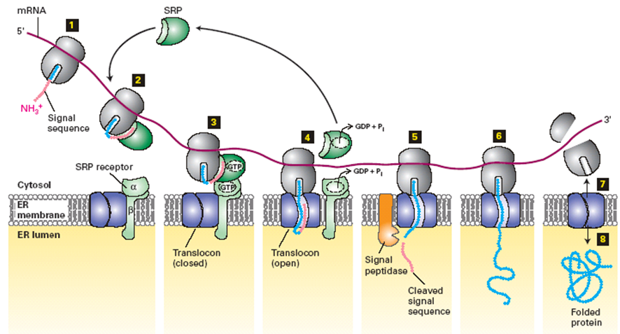
tehát csak az megy rER, melyiken van szignál-szekvencia
ER membránfehérje-szintetizálódás során, hogy alakul a fehérje "sorsa" (START/STOP)?
- fehérjék egyik vége -NH2, másik -COOH
- az, hogy ezek közül melyik lesz a citoszol fele, és melyik a lumen(ER) fele itt dől el
- ha a START-szekvencia nem vágódik le ➜ -NH2 a citoszol fele, ellenkező esetben a lumen fele
- ha a START = STOP ✽ ➜ akkor -COOH és -NH2 egy oldalon, ha nem akkor ellentétes oldalon 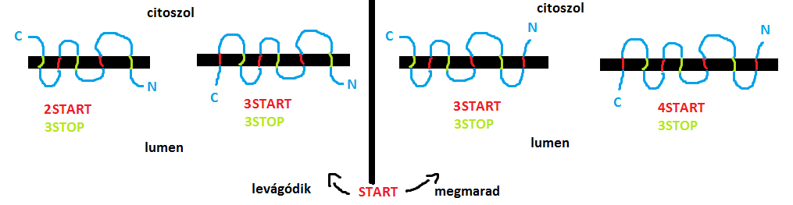 egyéb
~~~~~~~~~~~~~~~~~
rER lumenébe jutott fehérje sorsa?
- először is végbemegy mindegyiken az N-glikoziláció (kifejtését lásd máshol)
- ezután 3féleképp rendeződhet sorsa
- ittmarad
- ER membránba épül
- Golgiba megy
ER fehérje minőség ellenőrzés lényege?
- mielőtt tovább megy a Golgiba a fehérje, itt leellenőrzik, hogy helyes-e a szerkezete
- ha nem akkor kijavítják, vagy citoszolba juttatva a proteoszómák lebontják
- csaperon nevű enzimek végzik a feladatot ✽
N-glikoziláció ➜ milyen szintű szabályozás? hol történik?
- ko-transzlációs
- ER
N-glikoziláció ➜ lényege?
- rER-ben minden fehérje kap oligoszacharid-láncot az aszpargin(Asn)-aminósav oldalláncán lévő N-csoporthoz kötődve
- (dolikol-foszfát szintetizálja az oligoszacharid-láncot✽) 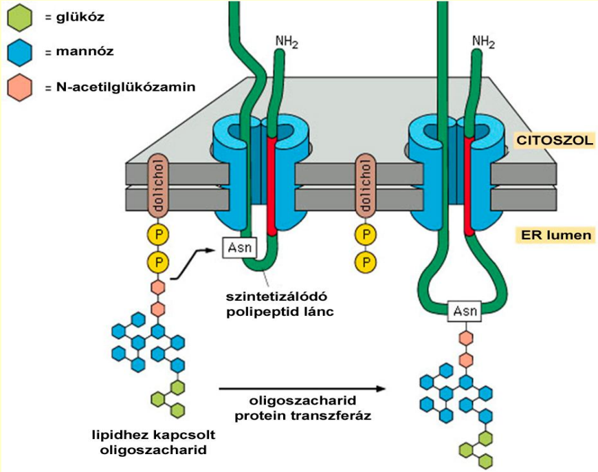
6. A Golgi-apparátus felépítése és működése.
Golgi-apparátus
mik között folytat transzportot?(4) ezek milyen típusúak?
- endoszomális_lizoszomális kompartment
- plazmamembrán
- ER
- ECM
- összes vezikuláris ➜ de azon belül már másfajták
~~~~~~~~~~~~~~~~~~~~~~~~~~~~
Golgi és rER mennyisége közti összefüggés?
- mind2 nagy mennyiségben fordul elő szekréciót végző sejtekben
- (logikus, hisz ha belegondolok a "fehérjesors" ábrán egymásutáni két állomás)
funkció?
- ER-ből érkező fehérjéket és lipideket átalakítja ➜ továbbküldi (ER/plazmamembrán/késői_endoszóma)
- átalakítás során szénhidrátot adhat az anyaghoz ➜ pl. glikolipidet készít lipidből, glikoproteint fehérjéből
polarizáltsága alatt mit értünk?
- ER irányába lévő része a cisz-Golgi-Network CGN
- plazmamembrán irányába lévő része a transz-Golgi-Network TGN 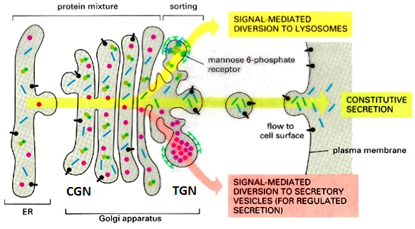
szerkezete?
-
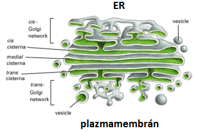
- 1 Golgi-apparatus = több Golgi-komplex(=)
- Golgi-komplex alkotói ➜ 3-7db ciszterna + ezeket körülvevő vezikulák
milyen fehérje-"címkézéseket" kell ismernem (csak soroljam fel őket!)?(3)
- M6P (foszforiláció)
- N-glikoziláció
- O-glikoziláció
M6P ➜ mit kell tudni róla?
- azon fehérjék melyek a lizoszómába mennek, a CGN-nél "megcímkéződnek"
- innentől semmilyen további módosítás nem éri már
- a "címkézés" lényege
- enzim(GlcNAc) felismeri a fehérjét, majd hozzákapcsolódik
- fehérjén lévő mannóz-csoportok közül 1-2 foszforilál(foszfát-csoportot kap!) ➜ M6P-szignál lesz belőle
- enzim leválik
O-glikoziláció ➜ milyen szintű szabályozás? lényege?
- poszt-transzlációs
- szénhidrátok kapcsolódnak egyes aminósavak oldalláncaihoz
- (Ser, Thr, hidroxiprolin és hidroxilizin oldalláncainak hidroxil csoportjához 1-3 cukor egység kapcsolódik)
milyen lipid-átalakításokat végez?
- ER készíti a membránlipidek nagyrészét, de itt is "készül" 2 fontos, az ER-ből érkező ceramid felhasználásával
- glikolipidek
- szfingomielin
Golgiból hova távozhatnak a fehérjék?
- exocitózis = konstitutív_szekréció ➜ folyamatosan megy
- szekréció = regulált_szekréció✽ ➜ adott jelre ürülnek ki
- késői_endoszómába
- vissza ER
(szekrécióval/exocitózissal vagy ECM-be vagy plazmamembránba jutnak)
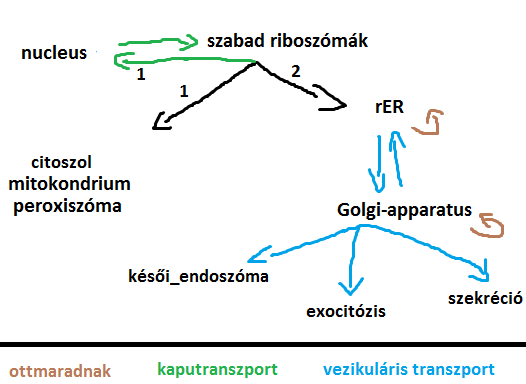
szekréció ➜ definíció? szinonimák?(2) (HP)
- hasznos anyagok kijuttatása a sejtből (szervezet számára hasznos)
- elválasztás = regulált_szekréció
- (nem tévesztendő össze az exkrécióval, ami a sejtek és a szervezet számára káros/felesleges anyagok eltávolítását jelenti)
szekréció mely sejtekben fordul elő?
- mirigysejtek
- neuronok
- ✽
7. Az endocitózis. A sejten belüli emésztés.
endocitózis.
endocitózis és exocitózis ➜ mi a legfőbb különbség a 2.tételben tárgyalt membrántranszportokkal szemben?
- membránnal körülvéve zajlanak
endocitózis és exocitózis ➜ energiaigényesség? !!!
- energiaigényesek
endocitózis típusai? melyik gyakoribb és következménye?
- fagocitózis ➜ szilárd anyag felvétele
- pinocitózis ➜ folyékony anyag felvétele, vezikulum veszi körbe
- pinocitózist minden (eukarióta)sejt végez, míg fagocitózis sokkal ritkább (pl. egysejtűek,makrofágok,mikrofágok)
- ➜ endocitózis alatt, alapvetően a pinocitózist értjük
~~~~~~~~~~~~~~~~~~~~~~~~~~~~~~~~~
fagocitózis funkciói?(2)
- immunfolyamatokban baktériumok bekebelezése ➜ makrofágok, mikrofágok [pl. neutrofil_granulocita] végzik
- elöregedett sejtek/sejttörmelékek bekebelezése
pinocitózis típusai?(4)
- klatrinburkos (=)
- nem klatrinburkos
- makropinocitózis
- konstitutív
- kaveolákkal történő
folyadékfázisú endocitózis mi?(LP)
- minden endocitózis során kis mennyiségben bejut válogatás nélkül néhány molekula,ion
transzcitózis lényege? 1pl?
- vezikulum lefűződés után átmegy a sejten és a másik oldalon kijut exocitózissal ➜ anélkül, hogy lizoszóma/ER/Golgi stb.-vel érintkezett volna
- pl. endothel sejtekkel az albumin szállítása
felvett anyag sorsainak felsorolása?
- endoszomális-lizoszomális rendszerbe jut
- transzcitózissal átmegy
Hanta-vírus hogy jut be?
- klatrinburkos endocitózis potyautasaként (egy integrin molekulát használ receptorként?!)
klatrinburkos.
szinonima?
receptor-mediált endocitózis
lépései?
- plazmamembránon receptorok vannak
- extracelluláris tér részéhez kötődik a ligand
- intracelluláris tér részéhez kötődik az adaptin és rajta keresztül a klatrinburok
- gödör ➜ lefűződés ➜ kialakul a vezikulum
- klatrin-burok leválik utána róla röviddel 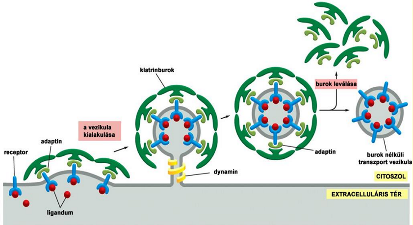
mik jutnak vele a sejtbe így?(3)
- vas-transzferrin komplex
- LDL
- növekedési faktor
funkciója általánosan?
- ez a sejtekre legjellemzőbb szelektív anyagfelvételi mód
§ hisz receptorok vannak !!!!
mi jut be, aminek nem kéne vele?
- Hanta-vírus potyautasként (egy integrin molekulát használ receptorként?!)
nem klatrinburkos.
gyakoriságuk?(JR)
- nem lehet tudni, hogy mennyire általánosak vagy sejtspecifikusak, de egyre többféle sejtben mutatták ki
makropinocitózis ➜ mechanizmusa? funkció? KÉP
- a sejt felszínén, a sejtmembrán alatti (’kérgi’) aktin segítségével sűrű, finom nyúlványrendszer alakul ki (’raffling’, ’ruffle border’), ezek veszik körül a ’bekebelezendőt’
- nem szelektív, gyakran ’tájékozódó’ jellegű (mi is van a környezetben?)
kaveolákkal történő lényege? KÉP
- vezikulum membránjában kaveolin nevű fehérje
- palack alakú ➜ KÉP
potocitózis ➜ mi? lényege?(2)
- kaveolákkal történő egy típusa
- a létrejött vezikula nem fűződik le, csak időlegesen bezárul, majd újra kinyílik
- bezáródás közben a belekerült anyagok carrierrekel kerülnek át a citoszólba
konstitutív_endocitózis funkciója?
- membrán összetételének szabályozása
A saját anyag lebontása.
módjainak felsorolása?
- autofágia
- karrier mediált proteolízis
funkcióra 1pl?
- elöregedett sejtorganellumok lebontása
autofágia ➜ mi váltja ki? lépései?(3)
- bizonyos indukciós hatásra megkezdődik (pl. éhezés, stressz, kórokozó)
- ()membrán körbeveszi a sejtorganellumot ➜ autofagoszóma kialakul
- autofagoszóma megérik, majd fúzionál a endoszomális-lizoszomális kompartmenttel
- megemésztődik a tartalom savas_hidrolázokkal
endoszomális-lizoszomális kompartment.
endoszomális-lizoszomális kompartment ➜ alkotóinak felsorolása? funkciójuk?
- endoszomális kompartment ➜ endocitózissal érkező anyagok szortírozása, továbbküldése
- 1korai_endoszóma
- 2késői_endoszóma
- 5lizoszóma ➜ anyagok bontása 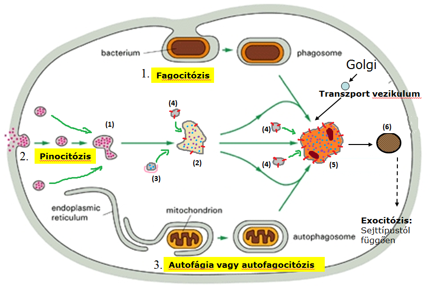
RAJZ pino/fago/autofago
1korai_endoszóma
2késői_endoszóma
3klatrinburkos vezikulum hoz enzimeket(M6P) Golgi-ból
4H+-pumpát tartalmazó vezikulum ➜ biztosítják majd az enzimek működéséhez szükséges pH-t
5lizoszóma ✽
6reziduális_test (bonthatatlan anyagokat tartalmaz) ➜ exocitózissal ki jut
exocitózis vs szekréció?
- szekréció olyan exocitózis, mikor a sejt a saját anyagát juttatja ki
- exocitózisnál lehet idegen anyag kijuttatása is (pl. reziduális test)
JR exocitózis vs szekréció
- lizoszómák "tök máshogy" néznek ki, mert tartalmukban a lebontott/lebontatlan anyagok aránya, típusai stb. igen sokféle lehet 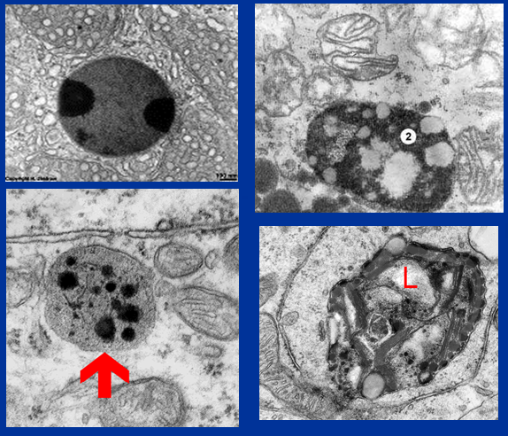
endoszomális-kompartment és Golgi közti különbség?
- endoszomális kompartment ➜ endocitózissal érkező anyagok szortírozása, továbbküldése
- Golgi ➜ exocitózissal érkező anyagok szortírozása, továbbküldése
- !?
anyagok milyen módszerrel szállítódnak tovább?
- vezikuláris transzporttal
pH ➜ milyen? mi biztosítja?
- citoszol > korai > késői > lizoszóma (egyre savasabb)
- ezt a kompartmentek membránjában lévő proton-pumpa biztosítja
klatrinburkos endocitózissal bekerült vezikulum sorsa ➜ vas-transzferrin / LDL / epidermális_növekedési_faktor?
- korai_endoszómába jut
- vas-transzferrin ➜ vas ittmarad majd továbbmegy késői_endoszóma | transzferrin+receptorok visszajutnak a plazmamembránba
- LDL ➜ LDL ittmarad majd továbbmegy késői_endoszóma | receptorok visszajutnak a plazmamembránba
- epidermális_növekedési_faktor(EGF) ➜ EGF + receptor is ittmarad majd továbbmegy késői_endoszóma
- továbbhaladnak lizoszómába és lebomlanak (EGF_receptor is lebomlik, így csökken a számuk plazmamembránban (nem lesz túl intenzív az EGF endocitózis) 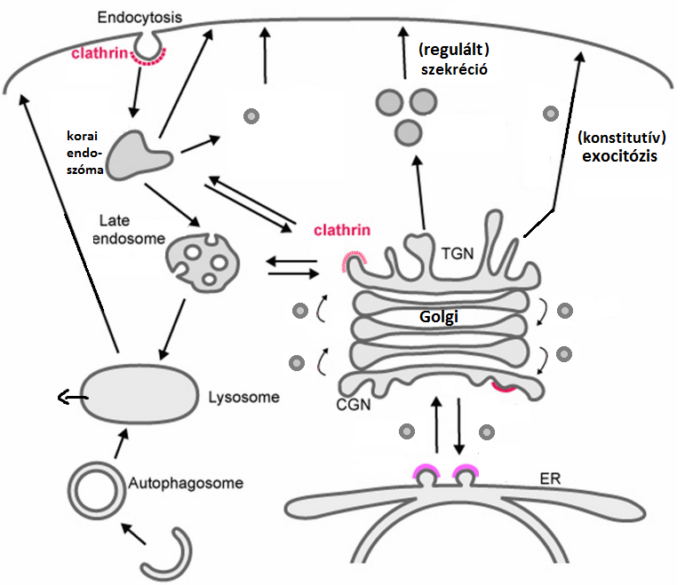
proteaszóma.
mi ez?(felépítését tekintve)
- multienzim-komplex
funkciója?
- fehérjéket bont le ...
- hibásakat
- vagy csak folyamatot szabályoz vele
folyamat-szabályozására 1pl?
- sejtciklus szabályozásánál az "APC és szekurin / B-ciklin"
- APC megjelöli a fennti kettőt, ami következtében a proteoszóma lebontja őket
!!! lásd bővebben sejtciklus-tétel
8. A vezikuláris transzport és az exocitózis.
általános.
RAJZ fehérjék "életútja"?
transzportok típusainak felsorolása?(3)
- kaputranszport (➜ magmembránon át)
- membrántranszport (➜ plazmamembránon át)
- vezikuláris-transzport
burkos_vezikulumok típusainak felsorolása?
- klatrin
- coatomer("kotomer")
- COPI
- COPII
klatrin_burkos vezikulum előfordulása?
coatomer ➜ mi? típusai? előfordulásuk?
- fehérjék
- típusai
- COPI ➜ Golgi-ból ER felé tartó vezikulum
- COPII ➜ ER-ből Golgi felé tartó vezikulum
kétféle vezikulum-burok közti 2 fő különbség?
- COP-burok létrehozása energiaigényes (klatrin nem)
- COP-burok nem válik le egyből (klatrin igen)
coatomer_burkos vezikulum képződése ás lefűződése tk.106kép?
- KIDOLGOZNI!!!! (COPI van a képen, COPII-nél az ARF helyett Sar1)
vezikuláris transzport és az exocitózis ➜ résztvevő molekulák.
csoportosításuk?(4) ✽
- szignálok
- burokképző fehérjék (adaptin,klatrin,COPI,COPII)
- tSNARE és vSNARE
- szabályozó fehérjék
szignálok funkciójára 1példa?
- pl. receptor_mediált_endocitózis során tirozin_tartalmú_peptid kell a receptorok összetoborzásához, lefűződéséhez
szabályozó fehérjék ➜ mik? funkciójuk?
- Rab és ARF
- ezek G-fehérjék, és mint minden más G-fehérje (pl.Ran) GTP vagy GDP kötött formában fordulnak elő
- ARF ➜ COP-burok képződését szabályozza
- Rab ➜ vezikulumok kikötését szabályozza
exocitózis.
JR lépései
- SNARE + Rab vegyem észre!

másnéven?
- konstitutív_szekréció
honnan-hova?
- Golgi ➜ plazmamembrán
fő funkciója?
- plazmamembrán méretét állandó szinten tartsa, hisz endocitózisnál csökken
miért fontos az exo- és endocitotikus folyamatok egyensúlya?
- ha az exo- és endocitózis nem lenne egyensúlyban, a plazmamembrán mérete változna
vezikuláris transzport lépései, szabályozása.
mi az első lépés?
- fehérjék kiválogatása a donor sejtalkotóban
- szignál ➜ fehérjén
- receptor ➜ donor membrán belső felszínén
fehérjék kiválogatása a donor sejtalkotóban ➜ ezután milyen lépés jön?
- vezikulum képződés és lefűződése
- szignál ➜ receptor külső felszínén
- burok
- citoplazmatikus felszínen
- lehet COPI/II vagy klatrin
vezikulum képződés és lefűződése ➜ ezután milyen lépés jön?
- vezikulumok a citoszkeleton segítségével szállítódnak ➜ aktin vagy mikrotubuluson "át" 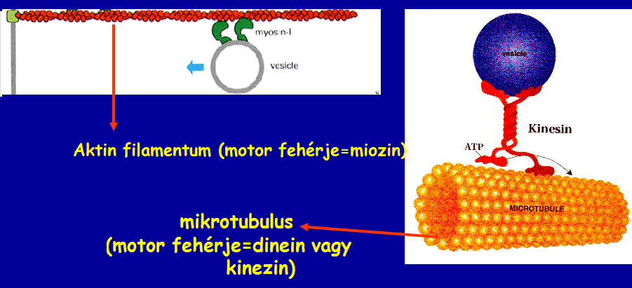
vezikulumok a citoszkeleton segítségével szállítódnak ➜ ezután milyen lépés jön?
- kihorgonyzás ➜ avagy hogy találják meg a vezikulumok a célmembránjukat?
- erre funkcionál a tSNARE(membráné) és vSNARE(vezikulumon)
- ugyanis vezikula mikor megérkezik a "célmembránhoz" ezek a fehérjék felismerik egymást és összekapcsolódnak
- dokkolás
- Rab-fehérje végzi
- energiaigényes
- fúzió 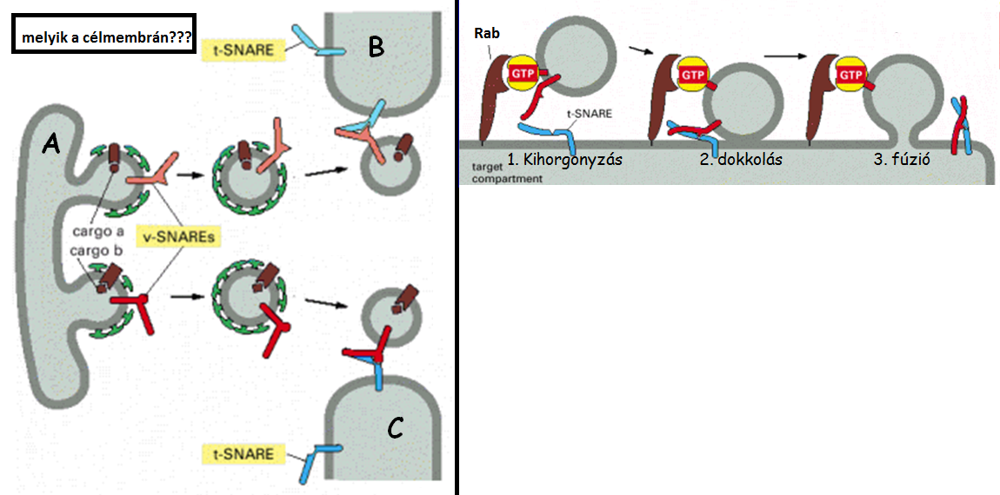
9. A mitokondrium és a peroxiszóma.
mitokondrium.
mérete?
- 0,5-1µm
JR milyen főbb funkciók zajlanak
- "energiatermelés" (citrátkör & oxidatív_foszforiláció & terminális_oxidáció)
- mitokondriális fehérjeszintézis
- mitokondriális lipidszintézis
- transzport folyamatok
- általános
- fehérje-import
- (RNS-import)
- apoptózisbeli szerepe
- osztódás
felépítése

1-4
1 mátrix
2 belső_membrán
3 külső_membrán
4 intermembán tér
membránok felépítése?
- külső_membrán
- 50%-lipid & 50%-fehérje
- jellemző fehérjekomponense a porin
- β-redőket formáló transzmembrán fehérje
- nagy akvaporinokat(vizes_csatornákat) alkotnak ➜ áteresztőbb a molekulákkal szemben, mint az átlagos membrán (5000dalton méretűeket vagy annál kisebb tömegű molekulákat átengedi)
- belső_membrán
- 80%-fehérje & 20%-lipid
- fontos lipidkomponense a kardiolipin ➜ ionok átjutását gátolja (átlagos membránnál kevésbé engedi át)
- elektronszállító rendszer 3 nagy enzimkomplexe
- ATP-szintetizáló enzim
- transzportehérjék (mitokondrium és citoplazma között)
porin?
ezen fehérjék között van..?(3)
mátrix alkotói?(4)
- sok enzim van itt, melyek a ➜ Szentgyörgyi-Krebs ciklus(szénhidrátok lebontásának egy lépése), β-oxidáció(zsírsavak lebontásának egy lépése), illetve mtDNS megkettőződéséhez szükségesek
- mtDNS (mitokondriális DNS)
- tRNS
- riboszóma
- (mitokondriumban található összes fehérje 2/3a itt van)
oxidatív_foszforiláció & terminális oxidáció lényege?
- citoplazmából beérkezik a mátrixba a glikolízis során keletkezett piroszőlősav (vagy)
- ez "hozzáadódva" a CoA-hoz képződik acetil-CoA ✽
- acetil-CoA "elindítja" a citromsav-ciklust
- citromsav-ciklus során "2 termék keletkezik" ➜ CO2 illetve NAD+ redukálódik NADH-vá ✽
- a keletkezett NADH ezután visszaoxidál NAD+-ra ➜
- az elektront az elektronszállító transzportrendszernek adja
- a proton a mátrixban van a belső membrán mellett
- xa nagy energiájú elektron az elektronszállító rendszeren végigmegy és lecsökken az energiája ➜ az energia arra használódik fel, hogy a protonokat a mátrixból kipumpálja az intermembrán térbe
- az elektron végül O2 csatlakozik a mátrixban ➜ az O2 egyből fel is veszi a mátrixban lévő protonokat és így keletkezik belőle vízx
- így a mátrixban lévő protonok száma alacsony (hisz ki lett pumpálva intermembrán térbe, illetve "oxigénbe" is valamennyit elvesz)
- az intermembrán térbe pedig nagy lesz a koncentrációja a protonnak, hiszen a belső_membrán gátolja a passzív visszajutását
- így a mátrix és intermembrán tér között pH(koncentráció) és feszültség(potenciál) különbség lép fel
- y ATP-szintetizáló enzim ezt felhasználva visszaengedi fokozatosan a protonokat, miközben az energiát belőle ADP-ből ATP képzésre fordítja y
- terminális_oxidáció x
- oxidatív_foszforiláció y
- egyenlőre így osztottam be őket ✽
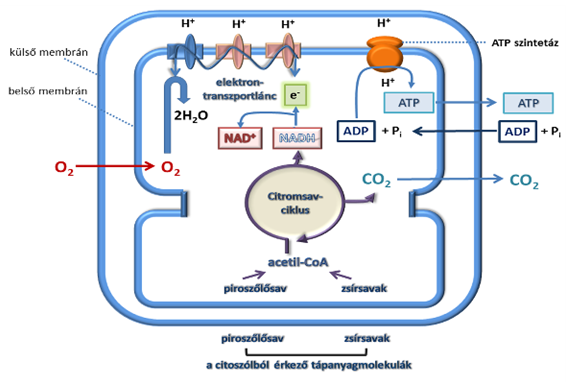
––––––––––––––––––––––––
milyen feherjek szintezise zajlik?
- csak 13polipeptidlánc szintézise zajlik itt, összes többi a [sejtmag-citoplazmában]
- ezek alkotói az elektronszállító láncnak illetve ATP-szintézis enzimkomplexnek
fehérjeszintézis "egyedisége", orvosi jelentősége?
- N-formilmetioninnal kezdődik a szintézis, csakúgy mint baktériumok esetében (ellenben eukariótáknál a citoplazmában alapvetően ugye metioninnal kezdődik!)
- fontos, hogy antibiotikumokkal gátolható a fehérjeszintézis
mitokondriális fehérjeszintézis hol zajlik?
- riboszómák (mátrixban)
mitokondriális lipidszintézis lényege?
- itt lényegében csak néhány ER-ben szintetizálódott lipid átalakítása történik
- ezek közül a legfontosabb a kardiolipin szintézise ➜ ez a belső_membrán egyik alkotója, mely gátolja az ionáteresztést
"általános" transzport lényege ➜ mik? energiaigényét mi fedezi?
- mivel a belső membrán e molekulák számára nem átjárható, szállításukat a belső membránba épült ()fehérjék végzik
- ezek felhasználják az eltérő proton koncentrációt a belső membrán két oldalán ➜ tehát az energiát nemcsak ATP-szintáz használja, hanem ezek is
- koncentrációgrádiens(pH) alapján működik pl. piroszőlősav & zsírsavak & foszfát & Ca2+ importja ?!
- feszültség alapján működik pl. ADP/ATP antiport ➜ ennek lényege, hogy ADP 3x negatív töltésű, ATP 4x negatív ➜ ADP megy be a mátrixba és ATP megy ki ➜ így csökken a potenciálkülönbség, azaz feszültség, hiszen alapból kinnt volt pozitívabb
§ mitokondriumok működése a különböző anyagcseretermékek folyamatos ki- és beáramlása mellett biztosítható
§ Ca2+ transzport normál esetben csak a saját ionszükséglet fedezésére szolgál, de a sejt sérülése esetén fontos szerepe lehet a citoszol Ca-szintjének szabályozásában
§ piroszőlősav(acetát) szimporttal jut be OH-al ?!
§ foszfát antiporttal jut be, és helyére OH- megy
fehérjetranszport lényege?
- mitokondrium fehérjéinek nagyrésze a [sejtmag-citoplazmában] szintetizálódott, mitokondriumban mindössze 13 peptidlánc készül
- ezért az előbbi fehérjéknek be kell jutnia
- ezeknek az N-terminális végén van egy szignál ➜ kb.20-50 aminósavból álló α-helix
- α-helix egyik oldala (+++++) pozitív töltésű tehát hidrofil, míg másik oldala hidrofób (szvsz apoláros)
- szignál jellegzetességét ez adja, nem a konkrét aminósav sorrend
- amikor elkészült a fehérje, akkor a szignált a csaperonok = hősokk_proteinekhez kötődik
- ezek kiegyensítve a fehérjét biztosítják az alagúton(TOM & TIM) való átjutást
- ATP fedezi az energiaszükségletét a csaperonoknak
- külső membránon a TOM fehérjéken keresztül jutnak be ➜ ATP igényes
- belső membránon a TIM fehérjéken keresztül jutnak be ➜ feszültség fedezi az energiát
- mátrixba bejutva egy szignál_peptidáz levágja a szignál részét
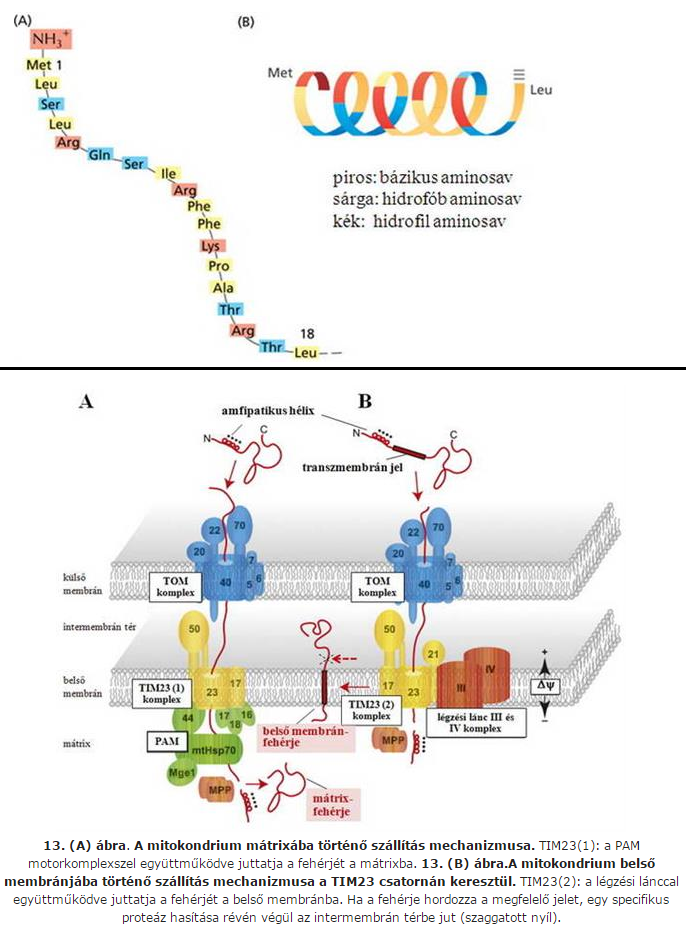
apoptózisbeli szerepe?
- kardiolipin megköt egy fehérjét (tBid), melynek a mitokondriális membrán labilizásában és a citrokróm C kibocsátásában van szerepe
- /részletesebben apoptózis fejeztben ír róla 117o/
mtDNS szerkezete?(3)
- cirkuláris
- nincs benne hiszton,nukleoszóma
- nincs benne intron
mtDNS mit kódol?
- 22tRNS
- 2rRNS
- 13polipeptid
mtDNS és Mendeli-szabály közti összefüggés?
- Mendeli-szabály nem érvényes rá, hisz megtermékenyítéskor csak a spermium feji része jut be, így 100%-ban petesejt szabja meg
mtDNS mutációs rátája milyen és miért?
- mutációs rátája magas
- nincs benne intron ➜ 93%-a az mtDNS-nek kódoló(fehérje/RNS) régió, míg sejtmagi DNS-nek csupán 3% (hisz annak nagyrésze intron, aminek nincs jelentősége ha mutálódik)
- oxidatív foszforiláció során reaktív oxigén gyökök keletkeznek, melyek károsítják az mtDNS-t (/fehérjéket)
- (hisztonok hiánya is növeli)
§ de vannak hibajavító enzimek itt is
mitokondriumok osztódása?
- hasonlít a baktériumok hasadására ➜ belső membrán betüremkedik és kettéválasztja a mátrixot, ezután a külső membrán is benyomul és kettéválik
- osztódásuk nem szinkron a sejtfázissal (bármely fázisban végbemehet)
- osztódáskór nem minden mtDNS kettőződik meg, illetve nem feltétlen csak 1x kettőződhet
§ új mitokondriumok nem "születnek", hanem a meglévők osztódása hozza őket létre kizárólag
mitokondriumok evolúciós eredete és bizonyítása?(8)
- kettős membrán, ráadásul...
- külső_membránban akvaporinok
- belső_membránban elektronszállító rendszer
- mtDNS
- cirkuláris
- intronjuk szinte nincs
- hiszton & nukleoszóma nincs
- N-formilmetioninnal kezdődik a fehérje-szintézis
- osztódása hasadásra hasonlít
endoszimbionta elmélet a legelfogadottabb ➜ bizonyításai: (hasonlóságuk)
őse mi?
§ mai mitokondriumok között jelentős eltérések is vannak már ➜ de a közös ős feltételezhetően a fotoszintetizáló_bíbor_baktérium lehetett
peroxiszóma.
krisztalloid mi?
- 121.oldal
evolúciós eredete?(2"ellen"érv +1)
- van 1rétegű membránja már csak
- nincs saját DNS-e
- azonban osztódása kb. ugyanaz, mint mitokondriumé (megnagyobbodik és osztódik)
endoszimbionta elmélet a legelfogadottabb ➜ mitokondriumnál előbb mehetett végbe, azért...
membránja hány rétegű?
- 1
főbb funkcióinak felsorolása?
- oxidációval lebontása az alábbiaknak ➜ zsírsavak, purin bázisok, aminosavak
- egyes toxikus anyagokat pl. etanolt,formaldehidet eloxidálva eliminálja
- alábbiak szintézise
- koleszterinéhez hozzájárul
- epesavakéhoz hozzájárul
- éter-lipidek szintézise csak itt van
- plazmalogén-szintézis első lépése
oxidációval lebontás lényege ➜ miket-mi bont le? mi keletkezik? energiaigény?
- alábbiakat oxidálja ➜ zsírsavak, purin bázisok, aminosavak
- ezeket lebontva első lépésben hidrogén-peroxid(H2O2) keletkezik (R-H2 + O2 ➜ R + H2O2)
- ezt a benne lévő kataláz enzim átalakítja vízzé
- közvetve pl. etanolt, formaldehidet oxidálva vele
- közvetlenül, ha nagy mennyiségben van
- így előnye, hogy egyes toxikus anyagokat pl. etanolt,formaldehidet eloxidálva eliminálja
- azonban fontos, hogy itt a lebontás során felszabadult energia, nem fordítok ATP-szintézisre, hanem hővé alakul
§ H2O2 károsító hatású, így ha nem lenne lebontva mutációt stb okozna !!!
toxikus anyagok eliminálásának lényege?
- alábbiakat oxidálja ➜ zsírsavak, purin bázisok, aminosavak
- ezeket lebontva első lépésben hidrogén-peroxid(H2O2) keletkezik (R-H2 + O2 ➜ R + H2O2)
- ezt a benne lévő kataláz enzim átalakítja vízzé
- közvetve pl. etanolt, formaldehidet oxidálva vele
- közvetlenül, ha nagy mennyiségben van
- így előnye, hogy egyes toxikus anyagokat pl. etanolt,formaldehidet eloxidálva eliminálja
- azonban fontos, hogy itt a lebontás során felszabadult energia, nem fordítok ATP-szintézisre, hanem hővé alakul
§ H2O2 károsító hatású, így ha nem lenne lebontva mutációt stb okozna !!!
miket szintetizál?
- éter-lipidek szintézise csak itt van
- koleszterin szintézishez hozzájárul
- epesavak szintéziséhez hozzájárul
- plazmalogén-szintézis első lépése itt van
plazmalogén lényege?(3)
- a myelinhüvelyben nagy mennyiségben előforduló foszfolipid
- így érthető, hogy a peroxiszómát érintő hiba idegrendszeri tünetek okoz
- csupán a szintézis első lépése zajlik itt
10. A sejtváz.
sejtváz.
másnéven?
- citoszkeleton
IF (LP2)
megoldás
1 mikrofilamentum
2 mikrotubulus
3 intermedier filamentum
IF (LP2)
megoldás
1 mikrofilamentum
2 intermedier filamentum
3 mikrotubulus
IF (LP2)
megoldás
1 mikrofilamentum
2 intermedier filamentum
3 mikrotubulus
JR eredete
- evolúció során előbb megjelent mint pl. peroxiszóma, mitokondrium
baktériumokban van?
- nincs, de a sejtváz két elemének (aktin + tubulin) őse kimutatható bennük
plektin ➜ mi? funkció?
- IFAP
- egymáshoz kapcsolja a sejtváz elemeit(imf-mf-mt)
sejtváz elemeinek felsorolása? (HP)
- intermedier filamentum
- mikrofilamentum
- mikrotubulus
sejtváz elemeinek (imf-mf-mt) funkcióit hogy érdemes felfogni?
- intermedier filamentum ➜ szilárd váz
- mikrofilamentum & mikrotubulus ➜ sejt alakváltozása, sejtorganellumok mozgatása
asszociált proteinek ➜ funkció?(3) 1-1pl?
- szabályozzák az elemek(pl. mikrotubulus) felépülését / lebomlását ➜ pl. timozin, prolifin
- kapcsolódásukért felelősek ➜ pl. plektin, tau
- motoros_proteinek ✽ pedig mozgatnak valamilyen anyagot a mikrotubulus/mikrofilamentum mentén ➜ pl. miozin I-II, kinezin, dinein
mt/mf/imf ➜ felépítésük jellemzése?(2) alkotóik?(2) polarizáció? átmérő?
| mikrotubulus | mikrofilamentum | intermedier filamentum | |
|---|---|---|---|
| felépítés | folyamatosan felépülnek/lebomlanak | ||
| monomerek alkotják (alegységek) | |||
| globuláris-fehérjék | fibrilláris-fehérjék | ||
| α/β-tubulin | G-aktin | sejttípustól függ | |
| polarizált vég - / + | van | nincs | |
| átmérő | mikrotubulus 25nm > intermedier 10nm > aktin 8nm | ||
tau ➜ mi? funkció?
- MAP
- ez közreműködik az idegsejtek axonjában lévő sok mikrotubulus kötegbe rendezésében
- a mikrotubulus-kötegek pedig közreműködnek a neurotranszmitter(ingerületátvivő anyag) tartalmú vezikulumok szállításában
kinezin + dinein ➜ mik? + funkció?
- kinezin ➜ sejtorganellumokat a mikrotubulus + vége felé mozgatják
- dinein ➜ sejtorganellumokat a mikrotubulus – vége felé mozgatják
MAP, azon belül motorfehérjék
dinein minek a felépítésében vesz részt?
ostorok és csillók
mozgás energiagényessége?
ATP igényes, minden lépése -1ATP !!
mikrotubulus.
szerkezete?(5)
- 13 protofilamentumból áll 1mikrotubulus
- 1protofilamentum sok dimer-ből áll
- 1dimer = 1α-tubulin és 1β-tubulin
- dimerek azonos irányítottságúak ➜ mikrotubulus 1ik végén α / másikon β tubulin van csak
- mikrotubulus α-vége - negatív / β-vége + pozitív
- α-tubulin és β-tubulin között kovalens
- dimerek között oldalirányba ionos és H-kötés
milyen kötések vannak?
átmérője?
- 25nm
felépülés/lebomlás ➜ lényege? szinonima?
- mikrobubulus 2 végén illetve a citoszolban lévő tubulinok GTP-t tartalmaznak
- amikor egy dimer a citoszolból ráépül a mikrobulus egyik végére, akkor amelyik kettő között létrejön a kovalens kötés, azoknál a GTP hidrolizál GDP-re
- pl. mikrotubulus negatív végén α-tubulinok vannak GTP-vel ➜ dimer β-tubulinrésszel kapcsolódik hozzá, és mind2 GTP hidrolizál GDP-re, így megint egy GTP-s α-tubulin (dimernek ez a tubulinja nem hidrolizált GDP-re) lesz legkívül
- azonban ha a mikrotubulus végén lévő tubulin GTP-je előbb hidrolizál GDP-re, mielőtt a dimer beépülne, akkor a felépülés megszakad és lebomlás lesz belőle
- (épülés sebessége 1,5m/perc –––––– lebomlásé 25m/perc) !!!!!!
- polimerizáció = felépülés ///// depolimerizáció = lebomlás
MAP-ok ➜ minek a rövidítése? 2pl?
- kapcsolódásukért felelős pl. tau
- motorfehérjék ➜ pl. kinezin & dinein
MAP = Mikrotubulus Asszociált Proteinek
toxikus anyagok?
- taxol ➜ tiszafa anyaga ➜ depolimerizációt gátolja
- kolhicin ➜ őszi kikerics anyaga ➜ polimerizációt gátolja (ennek következtében a sejtosztódást!)
MTOC ➜ jelentése? mik?(2) funkció?
- MikroTubulus_Organizáló_Centrum
- centroszóma illetve bazális_test is ilyen
- funkció ➜ mikrotubulusok szerveződési és eredési helye
- negatív
mikrotubulus mely vége néz MTOC irányába?
mikrofilamentum.
másik neve?
aktin_filamentum
monomerje?
G-aktin
felépülés/lebomlás ➜ energiaigény? sebesség?
- 2 G-aktin összekapcsolódásakor 1 ATP hidrolizál ADP-re
- + végén a polimerizáció(felépülés) kb. 10x gyorsabb
szerkezet?
- aktin_fehérjék egymáshoz kapcsolódva létrehoznak egy szálat
- 2 szál hélixszerű összekapcsolódásából jön létre a mikrofilamentum ➜ - és + vége szintén van(mikrotubulusnál is)
toxikus anyagok?
- citokalazin ➜ polimerizációt gátolja
- falloidin ➜ depolimerizációt gátolja
§ mindkettő egyes gombákban fordul elő ➜ falloidin pl. van gyilkos galócában (de konkrétan nem ettől olyan halálos)
motorfehérjék ➜ 2pl? hol fordulnak elő?
- miozin_I ➜ minden sejtben van
- miozin_II ➜ harántcsíkolt izomban
motorfehérjék ➜ miozinok (~40féle van)
kapcsolódásért felelős asszociált proteinek ➜ 2pl? hol fordulnak elő & funkció?
pl troponin izomsejteknél fordul elő ➜ Ca2+megkötődésével elfordítja az aktin szálat
pl tropomiozin izomsejteknél fordul elő ➜ meggátolja aktin miozinhoz kötődését
felépülés / lebomlást szabályozó asszociált proteinek ➜ 2pl funkcióval?
pl timozin ➜ polimerizációt gátolja
pl prolifin ➜ polimerizációt serkenti
ABP-k ➜ minek a rövidítése? funkció?(3) mindegyikhez 2pl?
- felépülés / lebomlást szabályozzák
- kapcsolódásukért felelős
- motorfehérjék ➜ miozinok (~40féle van)
Actin Binding Protein -ek
pl timozin ➜ polimerizációt gátolja
pl prolifin ➜ polimerizációt serkenti
pl troponin izomsejteknél fordul elő ➜ Ca2+megkötődésével elfordítja az aktin szálat
pl tropomiozin izomsejteknél fordul elő ➜ meggátolja aktin miozinhoz kötődését
pl miozin_I ➜ minden sejtben van
pl miozin_II ➜ harántcsíkolt izomban
mikroboholy felépítése?
- 20-30 aktin filamentumból áll
- pozitív végük van a csúcs résznél mindig
- ezeket villin és fimbrin kapcsolja egymáshoz (így egy kötegnek tekinthetők lényegében) !?
- membránhoz miozin_I kapcsolja őket
- terminal_web területen spektrin kapcsolja a citoszkeletonhoz (intermedier- & mikrofilamentumokhoz)
JR funkció, elrendeződés
- stress-fonalak ➜ egész sejtet átérik, pl. sebgyógyuláskor összehúzódnak
- amöboid mozgás
- izommozgás
- citokenezisnél kontrakciós gyűrű
- membránszkeleton (membrán alatti réteg, 91.KÉP)
- mikroboholy=microvilli alkotója
- stereocilium alkotója

intermedier-filamentumok.
monomer mi?
- fibrilláris-fehérje ➜ 7aminósavból áll
- egyik vége -NH2 másik -COOH
monomer sejttípustól függése mire használható fel?
tumorsejt eredete meghatározható, hisz olyat termel, amilyen szövetből származott
felépítés?
- monomerek egyik végén NH2, másik végén COOH
- dimer ➜ 2monomer összecsavarodik
- tetramer = protofilamentum
- 8protofilamentum ➜ intermedier filamentum

osztályaik?
- keratinok ➜ hámszövet
- neurofilamentumok ➜ könnyű / közepes / nehéz ➜ idegsejteknél
- laminok ➜ pl. A/B/C a lamina_fibrosánál
szerepük, előfordulásukra 2+1 pl?
- dezmoszóma & hemidezmoszóma ehhez kapcsolódik (sejten belül!)
- lamina_fibrosa a magmembrán stabilitását biztosítja
- tumorsejtek eredete ebből meghatározható, mert minden sejtben más a monomer ➜ tumorsejt monomerje megegyezik azzal a szövetével, ahonnan származik
IFAP ➜ jelentése? 1pl?
- Intermedier Filamentum Asszociált Protein
- pl. plektin ➜ összekapcsolja egymással a sejtváz elemeit (imf-mf-mt)
11. A sejtek kapcsolódása egymáshoz és környezetükhöz. Az extracelluláris mátrix (ECM).
általános.
sejt mivel tud kapcsolódni?
- sejt-sejt (másik sejttel)
- sejt-ECM (ECM-el)
lamina_basalis milyen sejtek körül van?(4)
- izom (sima+haránt)
- hám (nem körül, hanem alatt)
- zsír
- Schwann
membrán asszimetriára 3pl?
- glikolipidek csak a külső rétegben vannak
- bélhámsejtek_polaritása ➜ apikális és bazolaterális membránján eltérő összetétel KÉP
- nyugalmi_potenciál ➜ membrán belseje negatívabb töltésű
bélhámsejtek_polaritása ➜ funkció? mi biztosítja?
- bélhámsejt felszívás lépéseit biztosítja
- 1) apikális-membránon keresztül sejtbe kerülnek
- 2) bazolaterális-membránon keresztül az intersticiális térbe
- 3) végül onnan a véráramba
- zonula_occludens
- nem engedi, hogy laterális diffúzióval keveredjenek a membránkomponensek a 2 területen
zonula_occludens konkrétabban mit akadályoz meg?
molekulák.
ECM felépítő molekulák felsorolása csoportosítva?(HP)
- alapállományt felépítők ➜ proteoglikánok hyaluronsav
- szerkezeti elemek ➜ kollagének elasztin
- adhéziós elemek ➜ (egyes) glikoproteinek = laminin fibronektin stb.
- ✽ ✽
§ alapállományba van beágyazódva a többi (többi = fibrilláris = szerkezeti + adhéziós)
fibronektin ➜ mi? funkciójára 1pl?
- ECM felépítő adhéziós elem (glikoprotein)
- kötőszöveti ECM jellemző alkotója
- (de lamina_densat is elvileg ez köti össze lamina_fibroreticularissal)
kollagének ➜ mik? funkciójukra 1pl?
- ECM felépítő szerkezeti elemek
- lamina_densa alkotója a IV.típusú_kollagén
laminin ➜ mi? funkciójára 1pl?
- ECM felépítő adhéziós elem (glikoprotein)
- lamina_rara alkotója ➜ lamina_densat kihorgonyozzák a sejthez
JR integrinek
- transzmembrán heterodimer fehérjék
- heterodimer, ugyanis két különböző (α,β) alegységből épülnek fel
- α-alegység 2 részből áll, melyet diszulfid-híd köt össze

integrin extracellulárisan mihez kapcsolódik?
- mátrixban lévő RGD nevű aminósav-szekvenciához
- α-alegységnek és β-alegységnek vannak különböző típusai (α1,α2 stb. β-nál ugyanez)
- attól függően, hogy milyen 2fajta alegység kapcsolódik (pl. α2-β3), attól függ, hogy az ECM mely molekulájának RGD-jéhez fog kötődni (fibronektin, laminin, kollagén stb.)

proteoglikán funkciójára 1pl?
- a disztroglikán nevű proteoglikán részt vesz a harántcsíkolt izomsejtek lamina_basalishoz kötődésében
- disztrofinnal teremt kapcsolatot a sejtváz fele
- oka ➜ disztrofint kódoló gén hibás
- következtében az izomösszehúdást a lamina_basalis alig követi, amihez pedig az ín kapcsolódik
- páciensek fiatalon meghalnak légzési elégtelenségben (gyógyíthatatlan)
muszkuláris_disztrófia ➜ oka? következménye, prognózis?
muszkuláris_disztrófia ➜ oka? következménye, prognózis?
- oka ➜ disztrofint kódoló gén hibás
- következtében az izomösszehúdást a lamina_basalis alig követi, amihez pedig az ín kapcsolódik
- páciensek fiatalon meghalnak légzési elégtelenségben (gyógyíthatatlan)
IF
- integrin
megoldás
transzmembrán heterodimer fehérjék
heterodimer, ugyanis két különböző (α,β) alegységből épülnek fel
α-alegység 2 részből áll, melyet diszulfid-híd köt össze
protokadherinek mik?
- kadherinek egy speciális típusai
- (ezen belül még van kb. 50 fajta)
- idegsejtekben találhatók a szinapszisok területén
Ca2+ funkciója kadherineknél?
- szükséges ahhoz hogy merevek legyenek és így képesek legyenek kapcsolódás kialakítására
- hiányában tehát a kadherin szerkezete megváltozik és nem képesek dimereket képezni
adhéziós_fehérjék ➜ csoportosítása + mivel kötődnek?
- CAM ➜ cell adhesion molekula = sejt-sejt kapcsolatot létesít ➜ homofil-kötődés✽, kivéve ha a CAM szelektin!
- SAM ➜ substrate adhesion molekula = sejt-ECM kapcsolatot létesít ➜ heterofil-kötődés✽
- homofil-kötődés ➜ két ugyanolyan molekula kötődik össze
- heterofil-kötődés ➜ két különböző molekula kötődik össze
–––––––––––––––––––––––––––––––––––––––––––––
TAB adhéziós_fehérjék ➜ típusainak felsorolása?(5)
- aktin filamentum ➜ zonula_adherens estében
- intermedier filamentum ➜ dezmoszóma esetében
- aktin filamentum ➜ fokális_kontaktus estében
- intermedier filamentum ➜ hemidezmoszóma esetében
| kadherinek | Ca2+ / Mg2+függő |
sejtváz |
CAM/SAMCAM |
kötődés típushomofil |
| "Ig-szerű molekulák" | Ca2+ / Mg2+független |
sejtvázaktin-filamentum |
CAM/SAMCAM |
kötődés típushomofil |
| szelektinek | Ca2+ / Mg2+függő |
sejtvázaktin-filamentum |
CAM/SAMCAM |
kötődés típusheterofil |
| integrinek | Ca2+ / Mg2+függő |
sejtváz |
CAM/SAMSAM (&) |
kötődés típusheterofil |
| proteoglikánok | Ca2+ / Mg2+független |
sejtvázaktin-filamentum |
CAM/SAMSAM |
kötődés típusheterofil |
integrinek ➜ 1pl, amihez kapcsolódnak?
- lamininhez, és ezen keresztül a lamina_densa-hoz(IV-kollagén) KÉP
- fibronektinhez, és ezen keresztül kollagénhez
IF
- KADHERIN
- 5db ectracelluláris domén
- köztük Ca2+ kötőhely (ha nincs Ca2+, nem tudnak egymáshpz kapcsolódni, lásd kép)
- aktin
- (N-C vége)
- (kateninek)
megoldás
IF
- "Ig-szerű molekula"
megoldás
sejtkapcsoló struktúrák.
felépítő molekulák ➜ csoportosítása + mivel kötődnek?
- adhéziós_fehérjék (CAM & SAM)
- sejten belüli kapcsoló fehérjék ➜ adhéziós_fehérjét kötik a sejtvázhoz
milyen típusú kötődés van a sejt-sejt és sejt-ECM között?(adhéziós-fehérjék alapján)
- sejt-sejt ➜ homofil-kötődés, kivéve ha a CAM szelektin!
- sejt-ECM ➜ heterofil-kötődés
zonula_occludens ➜ mely sejtekben fordul elő? és azon belül hol?
TAB típusaik felsorolása?
| zonula_occludens | fő CAMokkludin |
sejtvázaktin filamentum |
mi közöttsejt-sejt |
|
| zonula_adherens | fő CAMkadherin-ek |
sejtvázaktin filamentum |
mi közöttsejt-sejt |
▉mi kapcsolja a sejtvázhoz()?vinkulin + katenin(alfa/beta/gamma) |
| dezmoszóma = macula_adherens | fő CAMkadherin-ek |
sejtvázintermedier filamentum |
mi közöttsejt-sejt |
|
| fél-dezmoszóma | fő CAMintegrin-ek |
sejtvázintermedier filamentum |
mi közöttsejt-ECM |
|
| fokális_kontaktus = fokális_adhéziós_komplex | fő CAMintegrin-ek |
sejtvázaktin filamentum |
mi közöttsejt-ECM |
▉mi kapcsolja a sejtvázhoz()?vinkulin + talin |
| gap_junction = nexus | fő CAMkonnexin-ek |
szerepejusxtakrin jelátvitel (sejt-sejt között) ➜ ionok átjuttatása |
||
IF

megoldás
1 zonula_occludens
2 zonula_adherens
3 dezmoszóma
4 gap_junction
5 fokális_kontaktus
6 fél-dezmoszóma
12. Sejtosztódás, mitózis, meiózis.
Az M-fázis (mitózis szakaszai és a citokinézis; kromoszóma kialakulás és szerkezet, mitotikus orsó felépítése, a kromoszóma-vándorlás mechanizmusa). A homológ kromoszómapárok ill. a haploid – diploid sejt fogalma. A meiózis szakaszai (az első osztódás profázisa: leptotén, zigotén, pachitén, diplotén, diakinézis, szinaptonémás komplex, tetrádképződés, crossing over) genetikai variabilitás, kromoszómapárok random szétválása. A második osztódás: testvérkromatidák szétválása
általános.
testvérkromatidák mik?(HP)
- 2kromatidás kromoszómában találhatóakat nevezzük így ➜ lásd pl. S fázis
- ezekben a szekvenciák (így allélok) azonosak (bár azért ha belegondolok crossing-over után ez se igaz már!)
haploid vs diploid sejt?
- diploid sejt kromoszómaszáma 46db (1 vagy 2 kromatidás)
- haploid sejt kromoszómaszáma 23db (1 vagy 2 kromatidás)

IF(HP)
- metafázisú
milyen fázisú ez a kromoszóma?
homológ kromoszómapár mi?(HP)
- diploid sejtben az azonos számú kromoszómapárok
- egyik apai, másik anyai erdetű
- pl. 1es számú kromoszómából van 2db egy apai és egy anyai, ezek homológ kromoszómapárok. 2db 2es számúnál ugyanez. De 1db 1es számú és 1db 3as számú nem homológ kromoszómapár.
- ezek azonos géneket (tulajdonság, pl. szemszín) tartalmaznak, de eltérő allélúak (apai pl.barna, anyai zöld)
/// mivel egy diploid sejtben 46db kromoszóma van, ezekben 23db homológ kromoszómapár van (márha a gonoszómák is azok, de ez nem biztos)
kondenzinek funkció?
- kromoszóma szerkezet kialakításában játszik szerepet
kohezin funkció?
- testvérkromatidák összetartása (centromernél)
scleroderma?(LP)
- autoimmun betegség
- kinetochor fehérje ellen termel antitestet a szervezet
mitózis.
mitózis milyen típusú sejtosztódás és miért?
- számtartó = kromoszómaszáma nemváltozik
diploid sejt sejtciklusa mitózissal ➜ DNS és kromoszómaszám a fázisok során?
- 1kromatid = 1DNS
- mivel diploid, ezért 23pár kromoszóma van ➜azért pár, mert van egy apai meg egy anyai eredetű
- 1kromoszóma állhat 1db vagy 2db kromatidból ➜ G1-ben még csak 1db-ból
- mert a DNS duplikációja ún. szemikonzervatív
- tehát a mind2 termékben az egyik helix a "szülői", míg a másik az új, amit most készült
- interfázisban persze a kromoszómák kromatin formában vannak, de a számuk ettől még ennyi
1DNS mi?
kiinduló helyzetben (G1) miért annyi DNS-e van?
kromoszómaszám jelölésénél jobb-alsó index azt mutatja, hogy hány kromatidból áll!
testvérkromatidákban miért azonosak a DNS-szekvenciák?(LP)
| G1 | S | G2 | P | M | A | T | |
|---|---|---|---|---|---|---|---|
| DNS | 46 | 92 | 92 | 92 | 92 | 46 & 46 | 46 |
| kromoszóma | 461 | 462 | 462 | 462 | 462 | 461 & 461 | 461 |
prophase lényege?(3)
- kromatin kromoszómává alakul (nucleolus megszűnik)
- 2 centroszóma elindul a sejt két ellenkező pólusára
- 2 centroszóma megkezdi közbe a mitotikus_orsók-szintézisét
prometaphase lényege?(3)
- nucleolus feltekeredik kromoszómákra és befejeződik kialakulásuk
- magmembrán felbomlik
- kromoszómák centromerjénál kialakul a kinetokor
metaphase lényege?(3)
- kromatidonként 1 kinetokorhoz kapcsolódnak a kinetokor_mikrotubulusok (kb.30-40)
- kromoszómák felsorakoznak a sejt egyenlítője mentén
- M-ellenőrzési pont ➜ kinetokorokhoz kapcsolódik-e mikrotubulus?
anaphase lényege?(1)
- testvérkromatidák szétválnak, a kinetokor-mikrotubulusok elhúzzák őket a citocentrum közelébe
telophase lényege?(2)
- kromoszómák kromatinná alakulnak (nucleolus újra kialakul)
- magmembrán újra kialakul
citokinezis ➜ mikor? lényege?(2)
- anaphase-ben kezdődik és telophase után fejeződik be
- aktin és miozinból álló ún. kontraktilis_gyűrű alakul ki az egyenlítő mentén
- ez összehúzódva kettéválasztja a citoplazmát
mitózis fázisainak felsorolása?
- pro- / prometa- / meta- / ana- / telophase
meiózis.
meiózis milyen típusú sejtosztódás és miért?
- meiózis I számfelező (redukciós) = kromoszómaszáma fele annyi lesz
- meiózis II számtartó = kromoszómaszáma nem változik
genetikai rekombináció hol történik?(HP)
- meiózis I prophase pachitén szakaszában crossing-over
- meiózis I anaphase-ben a homológ_kromoszómapárok szétválása random
meiózis P1 szakaszainak felsorolása?
- 1 leptotén
- megkezdődik a homológ_kromoszómák párba állása, másnéven szinapszisa
- szinaptonémás komplex végzi
- párba állás befejeződik ➜ tetrádok lesznek 234 (kromoszómaszám látszólagosan megfeleződött)
- crossing over ekkor megy végbe
- 4 diplotén
- 5 diakinezis ➜ szinaptonémás komplex eltűnik
2 zigotén ➜ lényege?
3 pachitén ➜ lényege?
meiózis II lényege?
- szinte ugyanaz mint a mitózis (p/m/a/t phase ugyanaz a lényegük)
meiózis A1-ben mik válnak szét?(HP)
- homológ kromoszómapárok
meiózis A2-ben mik válnak szét?(HP)
- testvér-kromatidák
meiózis mely osztódása során keletkezik haploid sejt?
- 1. osztódás után már haploid sejt keletkezik, hiszen számfelező, tehát már csak 232db kromoszómás sejtek keletkeznek
(diploid) sejt sejtciklusa meiózissal ➜ DNS és kromoszómaszám a fázisok során?
- 2db 2kromatidás kromoszóma (melyek homológok) egymás mellé állva tetrádot alkotnak (ezért lesz crossing-over)
P1-ben mi történik?
| G1 | S | G2 | P1 | M1 | A1 | T1 | P2 | M2 | A2 | T2 | |
|---|---|---|---|---|---|---|---|---|---|---|---|
| DNS | 46 | 92 | 92 | 92 | 92 | 46 & 46 | 46 | 46 | 46 | 23 & 23 | 23 |
| kromoszóma | 461 | 462 | 462 | 234 |
234 | 232 & 232 | 232 | 232 | 232 | 231 & 231 | 231 |
13. A sejtciklus és szabályozása, aszimmetrikus sejtosztódás.
A sejtciklus fogalma (interfázis: G1-, S-, G2- valamint az M-fázis). Szabályozó molekulák és ellenőrzési pontok (Cdk-k, ciklinek, Cdk-gátlók, foszfatázok). Korai embrionális és a standard sejtciklus jellemzői (SPF (start kináz), MPF és szubsztrátjai, APC hatásai). A soksejtűek sejtjeire jellemző sejtciklus (G0 szakasz, növekedési faktorok és jelátviteli mechanizmusuk, protoonkogének és tumor-szuppresszor gének hatásai, mutációk hatásai, G0-ból G1-be, a G1- ből az S-fázisba és a G2-ből az M-fázisba való átmenet). A centroszóma ciklusa. Az M-fázis (mitózis szakaszai és a citokinézis; mitotikus orsó felépítése. Ellenőrzési pontok működése.
általános.
sejtciklusok típusainak felsorolása?
- korai_embrionális
- standard
- soksejtűek sejtjeire jellemző

JR sejtciklus hossza
tumorsejtek sejtciklusának hossza?
- a tumor sejtek sejtciklusának hossza azonos vagy hosszabb, mint a normál sejteké!
- azonban a tumorban a sejtciklusban levő sejtek aránya sokkal nagyobb a G0 sejtekhez képest ➜ a sejtszám nő
sejtciklus során ellenőrzési pontok mely fázisban?
- G1 fázis végén (DNS nem-e sérült)
- G2 fázis végén (DNS nem-e sérült)
- metafázis (jól álltak-e fel a kromoszómák)
egysejtű és soksejtű szervezetek sejtjei mikor osztódnak?
- egysejtű ➜ addig osztódik, amíg valamely kedvezőtlen környezeti körülmény (negatív hatás) le nem állítja a sejtciklust
- többsejtű ➜ felnőtt szervezetben a sejtek addig nem osztódnak, amíg a környezetükből pozitív stimulust nem kapnak
sejtciklust szabályozó főbb molekulák felsorolása?(5)
- ciklin dependens kinázok (Cdk)
- ciklinek
- foszfatázok
- ubikquitin ligázok
- aktiváló és gátló kinázok és kináz inhibitorok
––––––––––––––––––––––––––––––––––––––––
§ kináz ➜ foszfátot tesz fel
§ foszfatáz ➜ foszfátot vesz le
TAB ciklinek és Cdk-k felsorolása?
- korai embrionális sejtciklusnál csak a legalsó sor
- standard sejtciklusnál alsó 2 sor
- soksejtűek sejtciklusánál mind a 4 sor
APC ➜ mi? funkciói?(2)
- ubiquitin-ligáz (ligáz egy enzim típus!)
- szekurint "megjelöli", ami által proteoszóma lebontja ➜ szeparáz aktívvá válik és lebontja a kinetokort alkotó kohezineket a centromernél ➜ testvérkromatidák a kinetokor_mikrotubulusok már szétválaszthatják
- B-ciklint "megjelöli", ami által proteoszóma lebontja ➜ MPF inaktív lesz citokenezis megindulhat
!!!! kinetokorhoz kapcsolódnak a kinetokor_mikrotubulusok (tehát a kettő nem ugyanaz)
Korai embrionális sejtciklus.
fázisainak felsorolása?
- S M
- nincs G1 és G2, tehát a sejtek mérete csökken
mi vezérli? annak lényege?
- MPF = M-Cdk
- az M-Cdk vezérli ➜ Cdk-1 és M-ciklin(=B-ciklin) komplexe
- tehát ha van B-ciklin az kapcsolódik a Cdk-1-hez és létrejön az aktív MPF ➜ sejt belép M-fázisba
- osztódás után a B-ciklin elbomlik és az MPF inaktíválódik ➜ sejt belép S-fázisba
ellenőrzési pontok mely fázisban?
- nincsenek
mi biztosítja, hogy ne lépjen túl korán M-fázisba?
az, hogy a B-ciklin szintetizálódása tovább tart, mint a DNS megkettőződése
standard sejtciklus.
fázisainak felsorolása?
- interfázis ➜ G1 S G2
- M-fázis (mitózis vagy meiózis)
G1 S G2 fázisban mi van?
- G1 sejtnövekedés
- S DNS-duplikáció
- G2 felkészülés az osztódásra
Cdk & ciklin a fázisokban?
- Cdk van végig
- G1 fázis végén S-ciklin(=A-ciklin) szintézise befejeződik és hozzákapcsolódik ➜ létrejön SPF = S-Cdk ➜ S fázisba lép
- S fázis végén S-ciklin lebomlik
- G2 fázis végén M-ciklin(=B-ciklin) szintézise befejeződik és hozzákapcsolódik ➜ létrejön MPF = M-Cdk ➜ M fázisba lép
- M fázis végén M-ciklin lebomlik
A soksejtűek sejtjeire jellemző sejtciklus.
sejtek milyen fázisban vannak?
- vagy a sejtciklus valamely fázisában
- vagy a G0 fázisban ➜ legtöbb sejt ebben a fázisban van (felnőtt szervezetben)
miért van a legtöbb sejt G0 fázisban? ✽
- mert a ciklinek hiányoznak
milyen szignál kell a G0 fázisból kilépéshez?
- növekedési faktorok
§ plazmamembrán receptoraihoz kötődnek (többnyire parakrin jelátvitel)
GF-re 1pl ➜ hol termelődik? mit serkent?
- termelik ➜ vese és emlő mirigyhámsejtjei
- serkenti ➜ hámsejtek, mesenchymasejtek, gliasejtek szaporodását
- termelik ➜ májsejtek
- serkenti ➜ pl. kondroblasztra és fibroblasztra hat
EGF
IGF
EGF ➜ mi termeli? mit serkent?(LP)
- termelik ➜ vese és emlő mirigyhámsejtjei
- serkenti ➜ hámsejtek, mesenchymasejtek, gliasejtek szaporodását
IGF ➜ mi termeli? mit serkent?(LP)
- termelik ➜ májsejtek
- serkenti ➜ pl. kondroblasztra és fibroblasztra hat
G0-G1-S átmenet lényege?
- GF hatására D-ciklin szintetizálódik ✽
- így a ciklin csatlakozva a Cdk-hoz létrejön az aktív D-Cdk ✽
- itt ha a DNS károsodott, akkor a p53 gátolja a folytatást, és visszaáll G0-ba ➜ez az ellenőrzési pont, szóval innen már S
- ha nem, akkor a pRb-E2F foszforilására a kettő külön válik ➜ pRb & E2F
- E2F ezután elindítja a ciklin-A és ciklin-E expresszióját
- a ciklin-E pozitív visszacsatolással serkenti a pRb-E2F foszforilálást ➜ gyorsan lejátszódik
- a ciklin-A -val pedig átlép S fázisba
§ ha a sejt itt pozitív szignálokat kap (sejtméret, jó tápanyagellátás és növekedési faktorok), akkor osztódik
§ ha nem kap pozitív szignálokat ➜ kilép G0-ba
––––––––––––––––––––––––––––––––––––––––––––––––––
G2-M átmenet lényege?
- ennek a lényege az MPF aktiváció
- Cdk1 és B-ciklin(=M-ciklin) kapcsolódik ➜ M-Cdk még inaktív
- egy gátló_kináz és aktiváló_kináz foszforilálja, egész pontosan 1-1 foszfátcsoportot rá tesznek ➜ M-Cdk még inaktív
- ezután amennyiben károsodás DNS-ben
- nem történt ➜ aktiváló_foszfatáz(Cdc25) defoszforilál, ugyanis lehasítja a gátló_kináz által felrakott foszfátcsoportot ➜ M-Cdk már aktív
- történt ➜ aktiváló_foszfatáz(Cdc25) nem fog defoszforilálni, mert inaktív (van rajta foszfát csoport)
§ kináz ➜ foszfátot tesz fel
§ foszfatáz ➜ foszfátot vesz le
MPF aktiváció ➜ mikor? lényege?
- G2-M átmenetnél
- Cdk1 és B-ciklin(=M-ciklin) kapcsolódik ➜ M-Cdk még inaktív
- egy gátló_kináz és aktiváló_kináz foszforilálja, egész pontosan 1-1 foszfátcsoportot rá tesznek ➜ M-Cdk még inaktív
- ezután amennyiben károsodás DNS-ben
- nem történt ➜ aktiváló_foszfatáz(Cdc25) defoszforilál, ugyanis lehasítja a gátló_kináz által felrakott foszfátcsoportot ➜ M-Cdk már aktív
- történt ➜ aktiváló_foszfatáz(Cdc25) nem fog defoszforilálni, mert inaktív (van rajta foszfát csoport)
§ kináz ➜ foszfátot tesz fel
§ foszfatáz ➜ foszfátot vesz le
ciklin és Cdk összekapcsolódásakor mi történik? (molekuláris szinten)
- egy szubsztrát foszforilálódik közben
MPF szubsztrátokra példák?(4)
- Cdc25 foszfatázt foszforilálva aktiválja ➜ ez további MPF-eket aktivál, hogy leveszi róluk a gátló_kináz foszfátcsoportját ➜ pozitív_visszacsatolás ("láncreakció")
- lamina_fibrosat foszforilálja ➜ szétesik a maghártya
- MAP (mikrotubulus asszociált proteinek) ➜ mitotikus orsó kialakulása
- APC

sejtosztódás főbb feltételei?(3) !!
- növekedési faktor
- szilárd aljzatra letapadás ➜ Fokális Adhéziós Kinázokat aktivál
- sűrűségfüggő sejtosztódás gátlás ➜ aljzaton legyen még szabad felület
osztódást szabályozó gének.
felsorolásuk?
- protoonkogének
- tumor szupresszor gének
protoonkogének ➜ funkciójuk? mutációjuk?
- olyan fehérjét kódolnak, melyek szükségesek az osztódáshoz ➜ főként a jelátvitelben résztvevő fehérjéket
- mutációja az onkogén
- domináns (tehát heterozigóta esetében is probléma)
- következtében a fehérjék nagyobb mennyiségben termelődnek vagy aktívabbak működnek
- részt vehetnek tumorok kialakulásában (hisz nő a serkentés)
tumor szupresszor gének ➜ funkciójuk? mutációjuk?
- olyan fehérjét kódolnak melyek gátolják az osztódást
- mutációja
- recesszív (tehát csak homozigóta esetében probléma)
- következtében a fehérjék kisebb mennyiségben termelődnek vagy kevésbé aktívan működnek
- részt vehetnek tumorok kialakulásában (hisz csökken a gátlás)
GF jelátviteli út lényege?(6)
- RTK (Receptor_Tirozin_Kináz) transzmembrán fehérje megköti a GF-et
- ez aktiválja a RAS-t (monomer G protein)
- ez aktiválja a MAP-kináz-kináz-kinázt
- ez aktiválja a MAP-kináz-kinázt
- ez aktiválja a MAP-kinázt
- ezek (késői) gének expresszióját serkentik, pl. D-ciklinét, mellyel beléphet G0-ból G1 fázisba
... (itt kimaradt pár lépés, (korai gének expressziója) nem olyan fontos) ...
tumor_szupresszor_gének által kódolt fehérjékre 2pl?
- p53
- pRb
protoonkogének által kódolt fehérjékre 3pl?
- ciklinek
- Cdk-k
- RAS
mely protoonkogén mutációja nagyon gyakori onkogénre? lényege?
- RAS
- RAS aktiválódik anélkül, hogy RTK megkötné a szignált(GF) ➜ beindul a jelátvitel magától ➜ tumorsejt növekedési szignáloktól független
p53 ➜ mi? funkció?
- tumor szupresszor gén (által kódolt fehérje)
- gátolja az osztódást ➜ ellenőrzési pontoknál checkolja, hogy nem-e sérült a DNS ➜ ha igen, repair, ha az sem elég apoptózis
pRb ➜ mi? funkció? mutációja?
- tumor szupresszor gén (által kódolt fehérje)
- gátolja az S fázisba lépést
- ugyanis alapvetően az E2F nevű TF-hez kapcsolódva inaktívan tartja
- azonban foszforilálódva (pl. normál osztódásnál) leválik róla, és E2F aktiválva kiváltja az S fázisba lépést
- ha a pRb mutálódik, akkor nincs ami inaktívan tartaná E2F-et így S fázisba lép a sejt
centroszóma.
szinonima?(1)
- citocentrum
MTOC ➜ jelentése? mik?(2) funkció?
- MikroTubulus_Organizáló_Centrum
- centroszóma illetve bazális_test is ilyen
- funkció ➜ mikrotubulusok szerveződési és eredési helye
- negatív
mikrotubulus mely vége néz MTOC irányába?
szerkezete?
- 2 egymásra merőleges centriolumból áll[9×3 mikrotubulus] + PCM
- PCM az a körülötte lévő kis terület, ebbe vannak γ-tubulinok
- γ-tubulinok ➜ mikrotubulusok negatív végükkel innen erednek
funkció?
- prophaseben mitotikus_orsók szintézise
- majd utána vándorolva metaphasere a sejt két szélére jutnak és onnan fogják a mikrotubulusukon keresztül széthúzni a kromoszómát/kromatidát
mitotikus_orsók ➜ szerkezete? típusai?
- mikrotubulosokból állnak
- 2típusa ➜ kinetokor és poláros
centriólumok száma a sejtben fázisonként?
- G1-től S fázis végéig 1pár van, akkor duplikálódnak 2párrá
- profázisban elkezd szétválni a 2pár, és metafázisba már szét is válnak (így telofázistól ismét 1pár lesz majd /sejt)

mi szabályozza megkettőződését?
- Cdk-2 (hasonlóan a DNS-replikációhoz!)
centriólum szerkezete?
- 9×3 mikrotubulus
14. A sejtmozgás; mechanikus jelek átvitele.
A sejtmozgás biológiai és orvosi jelentősége; típusai: taxisok, kinezisek (kemotaxis, haptotaxis, nekrotaxis). A sejtmozgást kiváltó anyagok főbb csoportjai (formilált peptidek, kemokinek) és ezek receptorai. Szöveti elaszticitás eltérései. A migráló sejt és környezetének mechanikai jellege, a sejt preferenciái.
A csilló és az ostor szerkezete és működése (A és B mikrotubulus, protofilamentum, dinein-kar, küllő, bazális testek). A csillós mozgás molekuláris mechanizmusa: a mikrotubulus sliding mechanizmus. Az amöboid mozgás.
A csilló és az ostor szerkezete és működése (A és B mikrotubulus, protofilamentum, dinein-kar, küllő, bazális testek). A csillós mozgás molekuláris mechanizmusa: a mikrotubulus sliding mechanizmus. Az amöboid mozgás.
sejtmozgás.
milyen fajta mozgásra képes a sejt?
- sejten belül a kompartmentek mozgatására
- maga a sejt is képes elmozdulásra (egy része / vagy a teljes akár)
mely részüket használják fel a sejtek mozgásukhoz?(HP)
- sejtváz
mozgás elemeinek csoportosítása?
- két csoportra osztjuk elemeit ➜ passzív elemek (sínként,útként funkcionálnak) és aktív elemek (motorként funkcionálnak)
- kétféle mozgás van a passzív és aktív elemek kombója alapján
- ha a passzív elem mikrofilamentum, akkor az aktív elem miozin
- ha a passzív elem mikrotubulus, akkor az aktív elem dinein vagy kinezin
| passzív elem | aktív elem |
|---|---|
| mikrofilamentum | miozin |
| mikrotubulus | kinezin+ & dinein- |
sejtmozgások tipusai (mozgás tipusa & "kiváltó dolog" alapján)?
kemotaxis ➜ mi?
- kemotaxis ➜ sejtek egyirányú helyváltoztató mozgása, melyet molekula (koncentrációjának változása) befolyásol
- kemoattraktáns ➜ molekula, mely vonzza a sejtet
- kemorepellens ➜ molekula, mely taszitja a sejtet
kemotaxisra 3pl? aka. sejtmozgás biológiai és orvosi jelentősége (HP)
1.pl neutrofil_granulocita érzékeli a bakteriális fehérjéket, ugyanis azok N-formil-metioninnal kezdődnek (kemoattraktáns a bakterális fehérje)
2.pl ivarsejtek egymásra találása
3.pl embrionális fejlődés során számos sejt vándorlása
kemo-/ orto-/ klinokinezis lényege?
- kemokinezis ➜ kémiai anyagok hatására random módon változtatják meg mozgási jellemzőiket (sebesség nagysága/iránya, frekvencia vagy amplitúdó) ➜ a kemotaxissal ellentétben, a kemokinézis esetében véletlenszerű, nem vektoriális jelleggel módosul a sejt mozgásállapota
- ortokinezis ➜ sebesség nagysága változik, iránya nem
- klinokinezis ➜ E.coli baktlriumnál használják, a mozgásának frekvenciája és amplitúdója változik, iránya nem
haptotaxis ➜ mikre jellemző? lényege 1mondatban?
- a szöveti térben mozgó sejtekre jellemző
- grádiens a felszínhez kötötten van
§ kemotaxis fluid térben is lejátszódhat, nem csak felülethez kötötten
nekrotaxis?
- a kemotaxis speciális formája, mely esetben elpusztult sejtekből felszabaduló, biológiailag aktív anyagok hatnak a környezetükben lévő sejtekre vonzó vagy taszító módon
sejtmozgást kiváltó anyagok főbb csoportjainak felsrolása?(2)
- formilált peptidek
- kemokinek
formilált peptid és receptor bemutatás 1pl-án?
- bakteriális tripeptid ➜ fMLP = formil–Metionin–Leucin–Fenil-alanin
- ezeket érzékeli az erre specializálódott receptor, az ún FPR (formilált-peptid-receptor)
- ez 7x éri át a membránt
kemokinek ➜ osztályozásuk? lényegük?
- főbb típusaik ➜ C, CC, CXC, CX3C (szerkezetüket tudjam: C-ek + diszulfid-híd + peptidlánc)
- alapvetően számos fehérvérsejt kemotaxisát váltják ki
- CX3C haptotaxist vált ki
A migráló sejt és környezetének mechanikai jellege, a sejt preferenciái ➜ lényege? (HP)
- nagyobb adhéziós protein denzitás(sűrűség) a "lágy_alapnál"
- "lágy_alap" fele mozog
- !? F-aktin mozgása !?
- !? ellenállás !?
JR A sejt és környezete között kialakuló kapcsolat – a sejtvázra hatva befolyásolja a sejtmozgást ➜ Eltérő mechanikai jellemzőjű anyagai a sejt környezetének más-más választ eredményeznek
csillós és ostoros mozgás.
átmérőjük?
- 0,4µm
milyen mozgásra képesek velük? 1-1pl?
- vagy a teljes sejt mozog ➜ pl. spermium, egysejtűek
- vagy a felettük található közeget mozgatják ➜ pl. trachea csillós tmsHH
hosszuk ➜ mikroboholy,csilló,ostor?
- mikroboholy < csilló(2-10µm) < ostor(100-200µm)
§ képen pl. csillók(G) és mikrobolyhok(nyíl) láthatók ➜ ostor még ezeknél is hosszabb
csillók és ostorok összhasonlítás ➜ átmérő? hossz? számuk? alapszerkezet?
- hosszuk eltérő ➜ ostor(100-200µm) > csilló(2-10µm)
- számuk eltérő ➜ csilló esetében sok van belőlük, ostorból 1 vagy 2db
- átmérőjük megegyezik
- alapfelépítésük megegyezik
RAJZ csillók és ostorok keresztmetszete?
- (9+1)pár mikrotubulus alkotja
1A mikrotubulus 13protofilamentumból tevődik ki, és ebből 4dinein karok nyúlnak a szomszédos pár fele
2B mikrotubulus 10-11protofilamentumból tevődik ki
3nexin ➜ szomszédos párokat tartja össze
5 plazmamembrán
6 küllő ➜ centrál és szélső mikrotubulusokat köti össze (A mikrotubulusból ered!)
IF
- csilló / ostor keresztmetszet
megoldás
1 A mikrotubulus
2 B mikrotubulus
3 nexin
4 dinein
5 plazmamembrán
6 küllő
bazális test ➜ helye? funkció? felépítése?
- csillók és ostorok alatt található
- ez is MTOC, csakúgy mint a centroszóma ➜ mikrotubulusok kialakulását szabályozza
- 9x3 mikrotubulus építi fel, csakúgy mint egy centriólumot
KÉP (alsó keresztmetszet csak le van kicsinyítve, de kb. ugyanolyan egy mikrotubulus ott is mint a fenntin)
dinein funkciója?
- mikrotubulus pár ennek segítségével elmozdul a szomszéd mikrotubulus-páron mint sínen, annak negatív pólusa felé
- de ez csak kis mértékben megy végbe, így elhajlás fog bekövetkezni ➜ ez indukálja a mozgást
4 dinein
mikrotubulus slicing?
- mikrotubulus pár ennek segítségével elmozdul a szomszéd mikrotubulus-páron mint sínen, annak negatív pólusa felé
- slicing lényege
- ATP-t megkötve a dinein kar elengedi a mikrotubulust, majd újra megfogja "negativabb irányba"
- ATP-t lebontva ADP-re "behajlik" a dinein kar
- de ez csak kis mértékben megy végbe, így elhajlás fog bekövetkezni ➜ ez indukálja a mozgást
4 dinein
két piros pötty az előző kapcsolódási helyet szimbolizálja
amöboid mozgás.
lényege 1 mondatban?
- szilárd_aljzaton állábak használatával helyváltoztatást végez a sejt
milyen sejtekre jellemző?(3+2)
1.pl egysejtűek, pl. amőba
2.pl embrionális fejlődés során számos sejt vándorlása
3.pl monociták & makrofágok
4.pl tumorsejtek metasztázis képzése hasonló módon
5.pl szövettenyészetben tartott sejtekre
állábak tipusai?
- filopodium (vékony,ujjszerű)
- lamellipodium (széles,lapos)
lépései?
- plazmamembránban a receptorok asszimmetrikusan oszlanak el ➜ sejt polarizált (van eleje és hátulja)
- a receptorok ligandot kötnek meg és ez kiváltja az aktin filamentumok polimerizációját
- ez pedig létrehozza az állábakat
- fokális_kontaktus-al kapcsolódik az álláb a szilárd aljzathoz
- sejt hátulsó felének a mozgás irányába történő húzódása
sejt polarizációja és állábak kinyújtása?
új kapcsolódások kialakulása?
LAD mi?
- Leukocita Adhéziós Deficiens
- fehérvérsejtek plazmamembránjában hiányoznak a FAK létrehozásához szükséges integrinek
- fehérvérsejtek igy nem képesek az érből a fertőzés helyére jutni
§ autoszomális recessziv
15. Sejtek közti kommunikáció, extracelluláris vezikula szekréció, trogocitózis.
Kommunikáció prokaryota és eukaryota sejtek között. Juxtakrin, autokrin, parakrin és endokrin kommunikáció. Trogocytosis, membrán nanocsövek. Az extracelluláris vezikulák alapszerkezete, termelődési mechanizmusai és fő típusai (exoszómák, mikrovezikulák, apoptotikus testek). Extracelluláris ligandok és receptoraik (citoszól/magreceptorok, membránreceptorok (ioncsatorna receptorok, trimer G fehérjéhez kötött receptorok, enzimkötött receptorok)).
sejtek közti kommunikáció.
jelátviteli folyamatok által kiváltott sejtválasz típusai?(4)
- túlélés
- osztódás
- differenciálódás
- apoptózis
prokarióták közti kommunikáció neve és lényege?
- neve ➜ quorom_sensing
- lényege ➜ a közelben lévő baktérium-"sűrűség" megindítja egyes gének expresszióját
- pl. kis létszám esetén nem, de nagy létszám esetében a biofilmképzés, toxin termelés megindul
§ biofilm ➜ mikroorganizmusok egy felületen összetapadt, egybefüggő bevonatot képező sejtjeiből áll. A sejtek gyakran az általuk termelt, nyálkának is nevezett extracelluláris polimer anyagokba (extracellular polymeric substance, EPS) ágyazódva helyezkednek el.
eukarióták közti kommunikáció típusainak felsorolása?(5)
- juxtakrin
- parakrin
- endokrin
- autokrin
- trogocytosis
juxtakrin típusainak felsorolása?(2+1)
- membránban van a receptor és ligandum is
- GAP junction
- plasmodesmata ➜ növényeknél
juxtakrin "membránban van a receptor és ligandum" jelátvitelre 1pl?

1.pl Notch-jelátvitel
2.pl immunológiai szinapszis
trogocitózis lényege?
- membránrészletek átjutása egyik sejtről a másikra
- ez történik, amikor lymphocyta találkozik olyan sejttel melyben van antigén ➜ összekapcsolódnak, majd a lymphocyta kivág az "antigénes-sejt" membránjából egy részt és a sajátjába teszi ➜ immunológiai_szinapszisnak is nevezik, csak akkor azt nem értem előadáson miért van az a juxtakrinnél példaként (wikipedia a dőlt betűs)
membrán nanocsövek általi kommunikáció lényegére 3pl?
citokinek ➜ mik? mire hozhatók fel pl-nak?
- jelzőmolekulák, melyek immunválaszt szabályozásában játszanak szerepet
- autokrin, parakrin és endokrin úton is szabályozhatnak
autokrin jelátvitel lényege?
- szekretoros és célsejt megegyezik ➜ sejtek a saját maguk által termelt anyagokra reagálnak
- citokinek
ligandumra 1pl?
parakrin lényege?
- jelkibocsátó sejt az extracelluláris térbe szekretálja a ligandumot ➜ közelben lévő sejtek receptorai fogják meg
- citokinek
- extracelluláris vezikulák
ligandumra 2pl?
endokrin lényege?
- jelkibocsátó sejttől a ligandum a véráramon keresztül jut el a test távolabbi pontjaira ➜ távolban lévő sejtek receptorai fogják meg
- hormonok (beleértve citokinek)
- extracelluláris vezikulák
ligandumra 2pl?
jel hatásának sebessége?
- gyors, amennyiben a citoplazmában található fehérjék funkciójának megváltoztatása megy végbe
- lassú, amennyiben a génexpresszión keresztül változik meg a citoplazmában lévő fehérjék
jelátvitel definíció?
- az a több lépcsős folyamat, melyben a jelek/szignálok hatására a sejtválasz létrejön
jelátvitel szinonima?
- szignál transzdukció
receptorok csoportosítása?
- sejtfelszíni = membránreceptorok ➜ amennyiben a szignál hifrofil
- intracelluláris (=) ➜ amennyiben a szignál hirofób (hisz apoláros molekula átjut a plazmamembránon)
intracelluláris receptor ligandumok ➜ jellemzőjük? 2pl?
- hidrofóbok ➜ ezért jutnak át plazmamembránon
- pl. tiroxin(=T4), tesztoszteron, kortizol, retinsav
kortizol ➜ mi?
- intracelluláris receptor ligandja
alábbi hírvívők besorolása receptor (és enzim) ➜ kortizol? ADH? acetil-kolin? tesztoszteron? T4? GF? retinsav? adrenalin? thrombin?
- membránreceptor
- GPCR
- adenilát-cikláz ➜ adrenalin
- PLC ➜ acetil-kolin ADH thrombin
- RTK ➜ GF
- intracelluláris receptor ➜ kortizol tesztoszteron retinsav T4
membránreceptorok.
csoportosításuk?
- pl. RTK
- képpel ne foglalkozzak, csak a lényeg, hogy nem ez a 3 van mindössze
ioncsatornák ➜ lényege?
G-fehérjéhez kötött receptorok = GPCR ➜ lényege?
enzim-kötött receptorok ➜ 1pl?
számos további receptor(➜ jelpálya) létezik
hírvívők csoportosítása?
- ezt köti meg a receptor
- pl. citokinek, adrenalin, neurotranszmitterek
- átalakítja, felerősíti a jelet (sejtválaszra lefordítja)
- pl. cAMP, cGMP, DAG, IP3, Ca2+
elsődleges hírvívő ➜ mi? 1pl?
másodlagos hírvívő ➜ mi? 5pl?
GPCR szerkezete?
- 7x éri át a membránt (transzmembrán fehérje!)
"GPCR receptoros jelátvitel" esetében a ligandra 2pl?
- adrenalin
- neurotranszmitterek
G-fehérjék csoportosítása?
- monomer
- trimer
"GPCR receptoros jelátvitel" esetében az enzimre 2pl?
- adenilát-cikláz
- foszfolipáz-C (=PLC)
adenilát-cikláz ➜ mi? funkció?
- enzim a GPCR receptoros jelátvitelnél
- ATP-t átalakítja cAMP-vá, mely másodlagos_hírvívő
adrenalin szignál esetében mi a ... receptor? enzim? másodlagos hírvívő? ✽
- GPCR a receptor
- adenilát-cikláz az enzim
- cAMP a másodlagos hírvívő
JR szignál amplifikáció, azaz 1db szignál molekulából "hány lesz"
PLC enzimes jelátvitel ➜ receptor mi? ligandra 1pl? lényege?
- GPCR a receptor
- ligand pl. acetil-kolin, ADH, thrombin
- receptor megköti a ligandot
- G-protein aktiválja PLC enzimet ➜ addig membránban horgyonyzott IP2 kettéválik két másodlagos hírvívőre:
- DAG ( ➜ PKC nevű kinázt aktiválja)
- IP3 ➜ sER Ca2+-csatornáját megnyitja
- Ca2+ is másodlagos hírvívő
lényege
acetil-kolin szignál esetében mi a ... receptor? enzim? másodlagos hírvívő?
- GPCR a receptor
- PLC az enzim
- másodlagos hírvívők ➜ Ca2+, DAG, IP3
kináz és foszfatáz enzimek működésének lényege?
- kináz ➜ szubsztrátra foszfátcsoportot tesz ➜ ATP/GTP közben ADP/GDP lesz
- ATP-t felhasznál közben és ADP lesz, hisz ebből nyeri a foszfátcsoportot és energiát
- vagy a kináz GTP-t kötő fehérje, ez esetben GTP-ből lesz GDP
- foszfatáz ➜ szubsztrátról foszfátcsoportot vesz le (itt nem ADP-ből ATP lesz)
RTK receptor ligandumjára egy jellemző példa?
- GF-ek
RTK működésének lényege?(LP)
JR (LP)
extracelluláris vezikulák
csoportosításuk?(HP)
- exoszóma 30-100nm
- mikrovezikula 100-800nm
- apoptotikus test vagy nagy onkoszóma 800nm-5µm
főbb alkotóik?(4)
JR definíció (LP)
- a sejtek által aktívan, evolúciósan konzervált módon termelt szubcelluláris képletek
JR képek
JR extrcelluláris vezikulák funkciói
4pl mely sejtek termelik?(HP)
JR emberben extracelluláris_vezikula miben van
mi fokozza termelését?
16. A sejtöregedés és a sejthalál.
A sejtek öregedését okozó magyarázó elméletek; külső és genetikai tényezők szerepe. A sejtek halála: a nekrózis és apoptózis definiciója és összehasonlítása. az apoptotikus vezikulák létrejöttének mechanizmusai Az apoptózist kiváltó és gátló szignálok, receptorok, jelátviteli útvonalak (TNF receptor család /haláldomén/, mitokondriális útvonal, túlélési faktorok. Az apoptózis effektor mechanizmusai: kaszpázok, transzglutaminázok és endo-nukleázok. Az apoptózis jelentősége az egyedfejlődésben és a betegségekben. A nekroptózis és piroptózis definiciója és előfordulásuk.
sejtek öregedését magyarázó elméletek.
2pl felgyorsult öregedés szindrómára és lényegük 1 mondatban?
- Hutchinson-Gilford szindróma ➜ lamin_A gén mutációja
- Werner szindróma ➜ helikáz mutációja
- fehérje, mely "kibontja" a DNS-t
helikáz mi?
melléktermék felhalmozódási elmélet lényege?
- egyre több bomlástermék keletkezik, mint amitől meg tud szabadulni ➜ egyre jobban gátolják a sejtek működését
- pl. lipofuszcin = öregedési_pigment száma nő a korral, de nincs bizonyítva, hogy gátolná a sejtek működését
keresztkötési elmélet lényege?(LP)
- bevezetés ➜ kollagének (ktsz-ben) közötti keresztkötések száma nő a korral ➜ pl. bőr ezért egyre kevésbé rugalmas
- elmélet lényege ➜ feltételezik, hogy pl. DNS-ben is kialakulhatnak keresztkötések, melyek befolyásolják az expressziót
szabad gyökök elmélet.
szabad gyökök kémiai tulajdonsága és mit okoz?
- rendkívül nagy a reakciókészségük, bármivel amivel találkoznak azt "szétcseszik"
- legrosszabb, ha a DNS-t károsítják (mutáció)
- (szerepet játszanak az öregedés-pigmentek és keresztkötések kialakításában)
számuk a korral hogyan változik?
- egyre több szabad gyök keletkezik a kor előrehaladtával
mi véd ellenük?
- egyrészt vannak olyan enzimek, melyek ezeket megsemmisítik
- kataláz & peroxidáz & szuperoxid-diszmutáz
- másrészt antioxidánsok gátolják a keletkezésük illetve semlegesítik őket
- antioxidánsok ➜ A/C/E-vitamin, glutation
––––––––––––––––––––––––––––––––––––––––––––––––
mire támaszkodik az elmélet?
- antioxidánsok megnövelik az élettartamot (késleltetik pl. szív-érrendszeri betegség, rák megjelenését)
kalória megvonás elmélet ➜ lényege? bizonyíték(2)
- tápanyagok lebontása során a mitokondriumban szabad gyökök keletkeznek
- ezért minél több tápanyagot fogyasztunk, annál nagyobb az esély a mutációra (főként mtDNS)
- tehát ha diétára fogják az az állatot, akkor nő az életkora
- bizonyíték
- egereken tesztelték és igazolta (diétásan tovább éltek)
- Okinawa szigeten élő japánok átlagéletkora magas
diéta esetében alultáplált, de ez nem egyenlő a rosszul tápláltal (tehát vitamin, ásványi anyag van elég, csak kalória a kevés)
hiba- és javítási elmélet.
mik tartoznak ide? ✽
- "mitokondriumok száma"
- "proteoszómák száma"
"mitokondriumok száma" lényege?
- mutációkat a repair enzimek korrigálják
- azonban az mtDNS mutációk száma nagyobb, és kevésbé hatékonyan javítódnak ki (!?)
- mivel 93% exon ➜ mutáció szinte biztosan a gént éri
- nincs hiszton ➜ nincs védve
- oxidatív_foszforiláció során mellette keletkeznek szabad oxigén gyökök
- mitokondriumok száma így a korral csökken
"proteoszómák száma" lényege?
- proteoszómák működése a kor előrehaladtával csökken
- és ezek bontják le a hibás/fölös fehérjéket
genetikai óra elmélet.
telomer mi?
- TTAGGG szekvencia a DNS két végén
- pár ezer bázispár hosszú
telomerrel mi történik?
- osztódáskor a keletkező DNS-en csökken a hossza
- primer részek pótlódnak mindenhol, kivéve a telomer részen (videót nézzem meg és megértem!!)
- ott ugyanis levágódik, ez kb. mínusz 20bázispárt jelent, azonban osztódásonként 50-100 bázispárral rövidül (annak feltételezhető oka a telomer oxidatív károsodás, mert a telomer extrém módon érzékeny az oxidatív stresszre)
- https://www.youtube.com/watch?v=TNKWgcFPHqw
- https://youtu.be/OjPcT1uUZiE?t=1m46s
telomeráz funkciója?
- őssejtekben, tumorsejtekben ez pótolja az osztódás után az elveszett telomer részt
telomer rövidülés mit eredményez?(2)
- maximálisan kivitelezhető osztódások száma csökken ➜ ugyanis egy hossz után nem osztódhat tovább a sejt, ha mégis akkor elhal (hisz onnantól az "értékes rész tűnne el fokozatosan")
- ahogy rövidül egyre több tumor szupresszor gén expressziója megy végbe
telomeráz orvosi jelentősége?
- szomatikus sejtek nagyrészében nincs ➜ tumorsejtekben van
- rákos betegség kezelésére így alkalmazható lehet (azonban ez még kezdeti stádiumban van)
- (illetve az is problem, h csak vannak a felnőttben olyan sejtek, pl. bőrben olyan őssejtek melyekben van telomeráz, hisz ott azért osztódniuk kell folyton)
sejtek halála.
nekrózis vs apoptózis ➜ energiaigényesség?
- nekrózis nem igényel energiát
- apoptózis energiaigényes
nekrózis ➜ mi váltja ki? sejt alakja hogy változik? mit vált ki?
- általában egy sejt fizikai/kémiai sérülés váltja ki
- következtében a sejt megduzzad ➜ plazmamembrán-felszakad
- tartalmuk kijut extracelluláris térbe ➜ gyulladást vált ki
- környező sejteknek is nekrózisa lesz
apoptózis ➜ sejt alakja hogy változik? mit vált ki? sorsa?
- vízveszteség következtében a sejt zsugorodik ➜ plazmamembrán nem szakad fel
- tartalmuk NEM jut ki extracelluláris térbe ➜ nem vált ki gyulladást
- ezenkívül a foszfolipid asszimetria megszűnik ➜ foszfatidil-szerin jut a külső rétegbe
- ezt felismerik makrofágok és fagocitózissal bekebelezik
apoptózis ➜ sejtmag sorsa?
- kromatinállomány kondenzálódik, magmembránhoz kapcsolódik, majd feldarabolódik
apoptózist kiváltó okok csoportosítása?(2)
- genetikailag programozva van
- környezeti hatás
apoptózisban résztvevő enzimcsaládok felsorolása?(3)
- endonukleázok
- transzglutaminázok
- kaszpázok
endonukleázok ➜ működésük mitől függ? funkciója?
- Ca2+ kell működésükhöz ✽
- DNS-t feldarabolják
- (először 50-300kiló bázispárnyi nagyobb fragmentumokra, utána 180bázispárnyi kisebbekre)
transzglutaminázok ➜ működésük mitől függ? funkciója?
- Ca2+ kell működésükhöz ✽
- fehérjék között keresztkötéseket alakítanak ki
§ véralvadásban a fibrinszálak összekötésében és a keratinociták elszarusodásában is részt vesznek
kaszpázok csoportosításuk?
- iniciátorok ➜ apoptózist elindítják (aktiválják egymást)
- effektorok ➜ apoptózist végrehajtják
IAP?
- kaszpázhoz kötődve gátolják annak aktivitását
- vírusokban is van, ezzel meggátolják a gazdasejt apoptózisát, ami által a vírus élettere megszűnne
IAP = inhibitor of apoptosis
pro-apoptotikus hatások felsorolása csoportosítva?(5) ✽
- extracelluláris ➜ T-limfociták FasL TNF-α
- intracelluláris ➜ "mitokondriumos" "DNS & p-53"
anti-apoptotikus hatások felsorolása csoportosítva?(3) ✽
- intracelluláris ➜ IAP Bcl-2
- extracelluláris ➜ túlélési növekedési faktorok, pl. NGF
T-limfociták extracelluláris pro-apoptotikus hatása?
- T-limfocita perforinnal lyukat képez a célsejt plazmamembránjában, melyen keresztül a granzim bejut és (kaszpázok aktiválásával) apoptózist vált ki
- ezenkívül membránjukon FasL nevű ligandum van, melyet a célsejt Fas nevű receptora megköti, és ez benne apoptózist vált ki ➜juxtakrin
kétféleképp teszik:
TNF receptor család /haláldomén/ ?
- zöld beindítja apoptózist, piros gátolja
- TRADD = TNF receptor associated death domain
- FADD = Fas associated death domain
két fő apoptózis indukáló útvonal felsorolása?
- death domaines
- mitokondriumos
mitokondriumos apoptózis indukáló útvonal lényege?
- mitokondrium intermembrán teréből kiszabadulnak fehérjék, köztük kiemelkedő jelentőségű a citokróm-C
- ez kapcsolódik a citoszolban lévő Apaf-1 és így megindítják az apoptózist (aktiválják a kaszpáz-9et)
- ✽
"DNS & p-53"?
- amennyiben a DNS káros, és nem sikerül kijavítani...
- ... akkor a p53 fokozza a pro-apoptotikus hatású fehérjék szintézisét, míg az anti-apoptotikusokét pl. Bcl-2 csökkenti
piroptózis, apoptózis, nekrózis, nekroptózis ➜ melyik programozott?
- összes, kivéve nekrózis
piroptózis, apoptózis, nekrózis, nekroptózis ➜ melyik vált ki gyulladást?
- nekrózis és piroptózis biztosan, illetve nekroptózis is feltételezhetően ✽
piroptózis ➜ lényege?(3) 2pl?
- gyulladással jár
- főleg intracelluláris kórokozóval történt fertőzés során megy végbe (Lásd Immunológiában!)
- kaszpáz 1 aktiváció történik (apoptózis során kaszpáz 8, 9, 7, 3 stb.)
- pl. Salmonella fertőzött makrofág, HIV fertőzött T-sejt
§ programozott sejthalál
§ (képen látható oldalon van részletesebben, de azt nem kell csak megőriztem)
kép - nyisd meg
- apoptózis "eat-me" szignálokat "eredményez"
- nekrózis gyulladást(inflamattory) kiváltó szignálokat "eredményez"
- nekroptózis feltételezhetően szintúgy gyulladást(inflamattory) kiváltó szignálokat "eredményez"
mit kell tudni leolvasni róla?
nekroptózis ➜ definíció? lényege? orvosi jelentősége?
- definíció ➜ nekrózis programozott formája
- death-receptorok aktiválásán keresztül megy végbe de úgy, hogy a kaszpázok gátolva vannak ➜ nekrózis fenotípusú, tehát nincsenek apoptotikus testek, hanem a sejt tartalma a extracelluláris térbe „folyik”
- orvosi jelentőség ➜ vírus fertőzött sejtek halála lehetséges akkor is, ha a vírus kaszpáz gátlókat termeltet
§ (képen látható oldalon van részletesebben, de azt nem kell csak megőriztem)
sejtek számát mi tartja egyensúlyban?
- apoptózis és az osztódás kiegyenlíti egymást (egészséges felnőttben)
"sejthalálhoz kapcsolódó betegségek".
degeneratív betegségek ➜ hátterükben mi állhat? 1pl és lényege?
- fokozott mértékű apoptózis
- pl. SMA = spinal_muscular_atrophy ➜ IAP-ok hiánya/rossz működése következtében az apoptózis nincs rendesen gátolva ➜ gerincvelő mozgatóneuronjai elhalnak
§ normál esetben az apoptózis és az osztódás kiegyenlíti egymást (egészséges felnőttben)
HIV-fetőzés ezzel való összefüggése?
- immunrendszer CD4,CD8 sejtjei apoptózissal elhalnak
csökkent mértékű apoptózis hátterű betegségre 1pl?
- egyes vírusfertőzések ➜ pl. herpesz, himlő ➜ hisz ezek anti-apoptotikus géneket tartalmaznak (lásd pl. IAP)
17. Őssejtbiológia, differenciáció.
Sejtsors, sejtdifferenciáció. Totipotens, pluripotens, multipotens, oligopotens és unipotens sejtek. Az őssejtek típusai (embrionális, magzati, felnőtt, indukált pluripotens őssejtek). Az őssejtek fogalma, jellegzetességeik. Az őssejtek sejtciklusa és annak szabályozása. Az őssejt niche. Az őssejtek biológiai és terápiás jelentősége. Regeneratív medicina.
http://web.med.u-szeged.hu/mdbio/hun/anyagok/2011-2012/II.felev/smge/12/1.Ossejtek-es-Regenerativ-Medicina-word.pdf
sejt potenciálja ➜ mit értünk alatta? tipusainak felsorolása?
- adott sejtből még hány fajta sejt képes kifejlődni
- minél nagyobb, annál többféle tud még
- ez alapján a sejteket 4 csoportba osztjuk: totipotens > pluripotens > multipotens > unipotens
totipotens_sejtek?
- embrionális és extraembrionális sejtek is képesek még belőle kialakulni
- ilyen egyedül a zigóta
pluripotens_sejtek?
- pluripotens-sejtek alatt az embrioblast-sejteket értjük, ugyanis ezekből bármilyen embrionális sejt kialakulhat még, de extraembrionális sejt már nem
- (epiblast sejtek még ide sorolhatók esetleg)
§ blasztociszta stádiumban a sejtek 2 csoportja: trophoblast-sejtek, és embrioblast-sejtek(=inner-cell-mass)
multipotens sejtek?
- gasztrulációtól már multipotens sejtekről beszélünk
- Ilyenek pl. a felnőttkori őssejtek
unipotens_sejtek?
- már sejtspecifikus, tehát egyféle sejtté tud már csak differenciálódni
őssejtek jellegzetességeik?(3)
- korlátlan osztódóképességgel rendelkeznek ➜ ömegújúlás (fenntartják az "őssejt készletet")
- emelett képesek differenciálódni különböző tipusú sejtekké ➜ az, hogy hány fajtára a potenciáljáól(toti/pluri) függ
- csak akkor differenciálódik, ha valamilyen szignált kap
őssejtek tipusai?(4)
- embrionális
- felnőttkori
- foetalis = köldökzsinóri
- indukált
felnőttkori őssejtek ➜ fő tulajdonsága 1pl-val bemutatva?
- nagyrészük már szövetspecifikus ➜ egy szövetet alkotó sejtek létrehozására képesek csak
- pl. hematopoetikus őssejtből determinációval kialakulhat többféle progenitor-sejt ➜ ezekből differenciációval már csak egyféle sejttípus alakul ki, tehát azok már sejtspecifikusak
§ ha a felnőttkori őssejt nem szövetspecifikus, akkor az nagy valószínűséggel tumor őssejt
felnőttkori differenciált sejtet mi pótolja?
- adott szövethez tartozó felnőttkori őssejt
- vagy a fenntiből származó progenitor sejt
embrionális őssejtek ➜ mik? potenciáljuk? fontos gén-expressziójuk?
- embrioblast-sejtek (esetleg epiblast-sejtek) !?
- pluripotensek
- Oct-4 TF-et expresszálnak
§ Oct-4 a többi sejttel ellentétben aktív, tehát felhasználható kimutatásukra (pl. gasztruláció után az embrionális csírasejtekben aktív már csak az Oct-4 ➜ ezt felhasználva meghatározható pl. helyük)
X inaktiváció?(LP)
- Nőkben a 23as kromoszóma 2X kromoszóma. Ha mindkettő aktív lenne, akkor 2x annyi termék lenne mint kéne, ezért az egyik inaktíválódik. Ez úgy történik, hogy amelyik inaktív lesz, transzkriptál egy nagy RNS-t (XIST a neve), amely nem fog transzlációt csinálni, hanem inaktívvá teszi az X-kromoszómát. Az, hogy az apai vagy anyai lesz-e inaktív blastocysta-stádium után dől el (előtte még az apai inaktív mindenképp és utána derül ki)
- embrionális őssejt esetében még mind2 X-kromoszóma aktív
embrionális őssejtek terápiás felhasználásának problémája és következménye?✽
- kevés emberi embrionális őssejt van
- ugyanis nem megengedett létrehozásuk (etikailag)
➜ felnőttkori őssejtekkel foglalkozik a kutatás inkább
legrégebbi felnőttkori őssejt, melyet terápiára használnak?
- csontvelő átültetésnél a hematopoeticus_őssejtek kerülnek át
mesenchymalis őssejtek terápiára való felhasználása a jövőben ➜ előnyök?
- multipotens, ugyanis több irányba képes még differenciálni (csont,porc,izom,zsírsejt,ínak)
- immunszupresszív tulajdonságúak ➜ elnyomják az ellenük irányuló immunválaszt ➜ nincs szöveti összeférhetetlenség
szív őssejt terápia problémái?
- amennyiben csontvelőből való őssejt átültetéssel probálják "pótolni/fixálni" a károsodást felléphet pl.arritmia, stb.
- amennyiben szív progenitor átültetéssel probálják "pótolni/fixálni" ➜ hogyan kell kiszedni a progenitort, amelyre szükség van? (meg kéne találni a megfelelő a markert, amivel kimutathatók)
mi teszi lehetővé az őssejtek egyszerre képesek ömegújulásra és differenciálódásra?
- egyik utódsejt marad őssejt
- másik differenciálódik
asszimetrikus osztódás ➜ ennek során sem változik DNS-ük, hisz mitózis
asszimetrikus osztódás
konkrét pl?
- ivarsejtek osztódása
mik teszik lehetővé? 1-1pl?(2+2)
- osztódás előtt a citoplazmában bizonyos_anyagok(pl.TF-ek) eloszlása nem szimmetrikus
- ezenkívül az osztódás síkja sem feltétlen szimmetrikus pl. neuroblast-osztódás, szekunder_oocyta és sarki_sejt
pl petesejtnek már a feritilizáció előtt van a citoplazmájának összetétele alapján bizonyos polaritása, azaz 2 részre osztható ➜ van egy animális fele, és egy vegetális fele (utóbbiban több a szikanyag, míg előbbiben a maganyag több)
citoplazmában lévő TF-ek hatása?
- DNS ugye megegyezik, de az eltérő utódsejtekben más TF-ek vannak, melyek más gének expresszióját engedélyezik majd
osztódás síkja asszimetrikus ➜ magyarázata?(LP)
- kinetochor és poláris_mikrotubulusok húzóereje eltér egyik és másik pólusnál ✽
niche ➜ mi? funkciója?
- differenciálódó sejt környezete
- szabályozza az osztódást, hogy inkább önmegújulás vagy differenciálódás legyen (hogy asszimetrikus legyen-e vagy sem)
kép differenciálódást gátolja, azaz önmegújulást serkenti
JR (indukált pluripotens sejtek)
- terápiás felhasználása még "in progress", okai ♫
18. Tumorsejt biológia, tumor őssejtek.
A tumorok keletkezésének többlépcsős elmélete. A sejtciklus ellenőrzési pontjainak átlépése a tumorsejtek esetében. Protoonkogének/onkogének, tumor szuppresszor gének szerepe, anti apoptotikus gének, telomeráz. A tumorsejtek jellemzői: növekedési szignáloktól való függetlenség, korlátlan proliferációs képesség, növekedést gátló útvonalak hiánya, apoptózis elkerülése, angiogenezis, metasztatizáló képesség. Tumor stroma, tumor mikrokörnyezet. Tumorsejt heterogenitás. Beningnus és malignus tumorok. Karcinogének/mutagének. Tumor őssejtek jelentősége.
tumor.
daganatos megbetegedések csoportosítása?(HP)
- jóindulatú = benignus ➜ bár ez is kontrollálhatatlanul növekedik, általában nem tör be a környező szövetekbe, és nem pusztítja el őket (nincs infiltráció és áttét). A jóindulatú daganatokat ugyanis egy hártya borítja, amely elszigeteli őket a környezetüktől, és általában lassan növekednek. Rendszerint eltávolíthatók, és legtöbbször nem újulnak ki. A belőlük származó sejtek nem szóródnak szét a szervezetben, és ami legfontosabb, a jóindulatú daganatok általában nem veszélyeztetik az életet
- rosszindulatú = malignus = rákos ➜ ezeket szinte soha nem borítja határoló hártya, és rendszerint gyorsan növekednek, betörve a környező szövetekbe (infiltráció)
hipertrófia & hiperplázia mi?
- hiperplázia ➜ sejtszaporulat következtében nő a sejtek száma ➜ szövet/szerv normálisnál nagyobb
- hipertrófia ➜ sejtek térfogata megnő ➜ szövet/szerv normálisnál nagyobb
daganat szinonimák?(2)
- neoplázia = tumor
rák előjelére 1pl? ✽
- hiperplázia
hány féle daganatos megbetegedés van?
- ~200
mely külső faktorok okoznak rákot?(5)
- kémiai anyagok, sugárzás, vírusok, baktériumok, életmód
mely belső faktorok okoznak rákot?(3)
- hormonok, immunológiai tényezők, örökletes mutációk
daganatos megbetegedés nevezéktana mi alapján? 1-1pl?
- az alapján, hogy mely szövetből ered ➜ pl.karcinóma hámszövet eredetű
- vagy az alapján, hogy mely szervből ered ➜ pl.emlőrák
mutációk típusai az alapján, hogy honnan származik?
- örökletes ➜ egyik szülő ivarsejtjében volt a mutáns allél ➜ összes sejtben megvan
- sporadikus ➜ szülők ivarsejtjében nem volt mutáns allél, hanem valamely testi_sejtben jelent meg később ➜ csak abban van mutáns allél
sporadikus_mutáció kiváltására 3pl?
- vírusok: pl. HPV ➜ méhnyakrák
- UV és ionizáló sugárzás ➜ bőrrák
- kémiai anyagok: pl. dohányzás ➜ tüdőrák
- baktériumok: pl. Helicobacter pylori ➜ gyomorrák
JR sporadikus mutáció
- ha egyik sejtben történik egy mutáció mely a tumor irányába tereli az még nem elég
- több mutáció szükséges 1 sejten belül ahhoz hogy tumorsejtté váljon
- így akár több évtizedig lappanganak egyes mutláódott sejtek amelyek gyűjtik a mutációk számát, és bármikor elérhetik a szükségest
bár gondolom ezen sejtek száma azért nem 1-2, hanem sok, de nagy részüket meg ki is szelektálja a szervezet
utóbbi években mely terápia jelentett áttörést a kezelésére? lényege? hátránya?
- immunterápia
- immunrendszer "felerősítve kiírtja" a tumorsejteket
- 16-20millió FT / páciens
tumorsejtek.
JR 6 fő ismérve a daganatos sejteknek(LP)
- növekedési szignáloktól való függetlenség ➜ folyamatosan aktív a GF jelátvitel
- rezisztensek a növekedést gátló szignálokra ➜ sejtciklus ellenőrző pontok inaktvitáltak
- immortalitás (telomeráz)
- sejthalállal szembeni rezisztencia ➜ aktivált anti-sejthalál jelátvitel
- érújdonképződés (angiogenezis) ➜ tumorsejtes szaporulat környezetében új erek képződnek
- invázió és metasztázis ➜ sejt-sejt kölcsönhatás elvesztése (pl. E-kadherin) ➜ ez csak rosszindulató esetében
GF-ektől hogy függenek?
- sehogy ➜ hiába nincs a környezetben GF, nekik folyamatosan aktív a GF jelátvitel
- emellett a GF gátló jelátvitel is inaktív
osztódóképességük?
- korlátlan, azaz immortál (oka pl. telomeráz)
metasztatizáló képességük, metasztázis lépései?
- invázió és metasztázis ➜ csak malignus esetében ––––––––––––––––––––––––––––––––––––––––
- epithelialis sejtek mesenchmyalissá alakulnak (EMT) ➜ alacsony E-kadherin, adhézió(sejt-sejt, sejt-ECM kölcsönhatás) megszűnik
- intravazáció ➜ betörnek erek lumenébe ✽
- elvándorolnak máshova
- extravazáció ➜ kilépnek az erekből
- távoli metasztázist(áttét) képeznek
(képeket csak megőriztem, LP)
1pl-val mutasd be miért függetlenek a tumorsejtek a növekedési szignáloktól!
- RAS normál esetben protoonkogén
- tumorsejtekben gyakran mutációval hiperaktívvá válik, és így ún. onkogén lesz
- eredménye, hogy Ras aktiválódik anélkül, hogy RTK megkötné a szignált(GF) ➜ beindul a jelátvitel magától ➜ tumorsejt GF szignáloktól független
() A rákos transzformációért főként a 12, 13, és 61. kodonok mutációi felelősek, aminek fő oka az, hogy ezek a mutációk inaktiválják a RAS fehérje GTPáz aktivitását, s így az nem képes saját magát az aktív RAS-GTP-ből az inaktív RAS-GDP állapotba alakítani. Magyarul, a RAS fehérje befagy az aktív állapotba, azaz mitogén indukció nélkül is aktiválja a downstream folyamatokat (pl. MAP kinázokat)
JR Ras folyamatos aktiváltságának okára másik 2pl
- emlőrák esetében a receptorok száma túl nagy, így mindig aktiválják a Rast
- glioblasztóma esetében pedig a receptor szignál nélkül aktiválódik, aminek következtében folyamatosan aktív, és így a Ras is
mutációk típusai az alapján, hogy milyen gént éri?
- driver ➜ ilyenkor "nagy fontosságú" gént éri, pl. Ras,p53,pRb (lásd 13.tétel)
- passenger ➜ többi
Warburg-hatás ➜ mi? oka? következménye?
- 1 glükóz lebontása során keletkezik ➜ glikolízisnél 2ATP és citromsav-ciklus + oxidatív foszforilációnál ~36ATP
- amennyiben nincs elég oxigén, a glikolízis során keletkezik csak 2ATP
- Warburg-hatás ➜ tumorsejtek energiatermelésének megváltozása
- tumorsejteknél a glükózok nagyrésze anaerob úton bomlik le és kis része aerob módon ➜ átlagosan 1 glükóz lebontása során kb ~4ATP keletkezik
- oka ➜ anaerob glikolízis esetében gyorsabban termelődik összeségében az energia (igaz hogy jóval alacsonyabb hatásfok / glükóz, de összeségében több ATP/sec) ➜ tumorsejtek hiperaktív osztódása pedig megigényli
- következménye
- tumorsejtek glükóz-felhasználása sokszorosa(100x) a normál sejtekének (& tejsav felhalmozódás)
- tehát daganatos beteg nagy mennyiségű szénhidrát(cukor) bevitele növeli a tumorsejtek túlélési valószínűségét
- illetve angiogenezisre is ezért van szükségük
- 1 glikolízis 1glükóz(C6H12O6) + NAD+ ➜ 2piruvát(C3H3O3-) + 2H+ + 2ATP + 2H2O + 2NADH
- 2A ha van oxigén citromsav ciklus & oxidatív foszforiláció ➜ +36ATP
- 2B ha nincs elég oxigén 2piruvát + 2H+ + 2NADH ➜ 2laktát(C3H5O3-) + 2NAD+ !!!!!!!!!!!!!!!!!!!!!
––––––––––––––––––––––––––––––––
––––––––––––––––––––––––––––––––
angiogenezis ➜ mi? hogyan? oka?
- tumorsejtek környezetében erek képződnek
- ezt a tumorsejtek indukálják parakrin módon
- ugyanis magas szintű tápanyagellátásra van szükségük a fokozott mértékű osztódás biztosításához
daganatos betegségek fő halálozási oka?
- metasztázis képzése (csak malignus képes rá)
tumorsejt heterogenitás?
- tumorok sejtösszetétele heterogén
- vannak pl. maguk a tumorsejtek, az angiogenezis során létrejött endothel-sejtek, immunsejtek, fibroblast-sejtek
- ezenkívül a tumor őssejt és differenciált leszármazottjai is felfogható heterogenitásként (lásd 600.miért ezek a "kritikus problémák"?)
tumor őssejtek.
immunválasszal szemben milyenek?
- nagyon rezisztensek
markerük?
- nincs egyedi markerük ➜ pedig ezen sejteket kéne csak hatástalanítani
kialakulásuk? 1-1pl!
- felnőttkori őssejtek mutációja révén alakulnak ki
- de differenciált sejtek vissza-differenciálódásával is létrejöhetnek ––––––––––––––––––––––––––––––––––––––––––––––––––––––––––––
- pl. kolorektális_karcinóma esetében, ha őssejt mutációja megy végbe (mivel az a kripták mélyén van kétoldalt), akkor "bottom-up" lesz
- pl. kolorektális_karcinóma esetében, ha differenciált sejt vissza-differenciálódásával megy végbe, akkor "top-down" lesz
miért ezek a "kritikus problémák"?
- ezek képesek önmegújításra ➜ hosszú távú fenntartására a tumornak ezek képesek
- logika a kép alapján ➜ ha ezek el vannak távolítva, akkor pl. ha megnézem a legfelső szürke-sejtet, oké hogy az is sok tumorsejtet létrehoz még, de következtében a számuk csökkeni fog ➜ tehát ha nincs több tumor őssejt, akkor ha folyamatosan megfelezem a tumorsejtek számát, akkor egy idő után elfogynak ➜ ugyanis a többi tumorsejtnél pl. nincs telomeráz így meg van szabva, hogy hány osztódásra képesek max
kemoterápia fő problémája?
- ha tumor őssejt túléli, akkor relapszus lesz
- (illetve legyengíti immunrendszert stb.)
tumor őssejt miért különösen rezisztens kemoterápiára?
- multidrog rezisztencia proteinek nagy számban vannak bennük
- ez karrier-fehérje
- apoláris molekulákat pumpálnak ki a sejtből ➜ pl. gyógyszer, toxikus fehérje
- így kipumpálják magukból a gyógyszereket
19. Az evolúció. Prokarióta és eukarióta sejtek. A szervezet mint ökoszisztéma; a mikrobiom.
A biológiai evolúció definiciója és bizonyítékai. Evolúció és kreáció, félreértelmezések és ideologisztikus szélsőségek. A földi élet jellegzetességei. Elméletek az élet kialakulásáról, prokariota és eukariota sejtek és szervezetek megjelenése földtörténeti dimenzióban. A mikrobiom, mint “másik” saját. A mikrobiom kialakulása, összetétele, diverzitása és biológiai hatásai egészségben és betegségben.
evolúció.
mikor jelentek meg a prokarióták?
- 4milliárd éve
mikor jelentek meg az eukarióták?
- 2milliárd éve
"Ádám-Éva" gének?
- Éva ➜ mitokondriális DNS
- Ádám ➜ Y kromoszóma
hol jelent meg a homo_sapiens és mikor?
- Afrikában
- 50-60ezer éve
biológiai élet feltétele?(3)
- szaporodás, változékonyság, öröklődés
mi volt az első makromolekula?
- egyenlőre nem lehet biztosan tudni
- lehetett DNS vagy RNS vagy fehérje
§ jelenleg talán az RNS a legvalószínűbb
élőlények közös pontjai(alrendszerei) egyszerűsítve?(3)
- programvezérlő alrendszer ➜ DNS
- határoló alrendszer ➜ membrán
- anyagcsere alrendszer
motorjai ➜ felsorolásuk? lényegük?
- mutáció ➜ új genetikai változatok jönnek létre random
- szelekció ➜ következtében a nagyobb rátermettségű genetikai változat terjed el NEM random ("optimum-keresés")
mutáció ➜ oka?
- egy sejtben 3,2milliárd bázispárhossznyi DNS van
- minden másolása során történik másolási hiba ➜ ugyanis lehetetlen, hogy ne történjen (még ha minden környezeti feltétel jó lenne akkoris)
- egy DNS-replikáció során 43,2milliárd variáció keletkezhet ➜ ezek közül 1 egyezik meg az eredetivel, összes többi mutáns
§ ezen számok természetesen nem azt jelentik, hogy tele vannak másolási hibával a keletkezett DNS-ek, csak a lehetőséget mutatja, hogy mennyi változat alakulhat ki
mutációnak ha van biológiai jelentősége milyen lehet?(3)
- ezek nagyrésze káros, pl. Dawn-kór
- kisrésze előnyös, pl. barna színű a rovar, így a madár nem veszi észre a fakérgen, míg az eredeti kék színűt igen
- persze lehet mind2 is, pl. sarlósejtes vérszegénységgel élők ➜ + rezisztensebbek a maláriára || azonban ha mind2 allél mutáns, akkor fiatalon elhaláloznak –
mutációk kis részének van biológiai következménye...
mutációnak mekkora az esélye, hogy van biológiai jelentősége és miért?(2)
- DNS kis százaléka (1,3%) kódol fehérjét csak (sőt)
- ezenkívül még a telomer, RNS-eket kódoló szakaszok, melyek változást okoznak, de ezek együtt se több sokkal
- (DNS nagy részét úgy fogjam fel, mint egy pajzs, ami következtében csökken az esély, hogy a mutáció biológiai változást eredményez ➜ hisz mtDNS ezért gyenge, mert nincs ezen pajzsa)
- (!!!)
másolási hibáknak nagyon kicsi az esélye, hogy bármiféle biológiai jelentőségük legyen, ugyanis...
§ úgy érdemes felfogni, mint a könyvet(vagy épp ezt a kidolgozott jegyzetem) amikor olvasom, abba is vannak hibák és egy részén át is fut a szemem, mert annyira jelentéktelen, hogy fel se fogom, mert csak a tartalmát értelmezi az agyam kb.
§ előbbi könyben van 1-2 olyan helyesírási hiba, amin megütközik az ember szeme (pl. vér vs. ver) (persze itt a kettő aránya más, mert azért nagyobb eséllyel veszek észre helyesírási hibát, mint amekkora esélye annak van, hogy biológiai következménye legyen)
definíciója?
- élővilág genetikai transzformációja ➜ diverzitás (sokféleség) növekszik
§ fejlődésről szó sincs !!! ➜ lényeg, hogy nem szabad magasabbrendűnek tekinteni pl. az emlőst a baktériumnál, ugyanis a komplexitás más egyiknél és más másiknál
Lamarck evolúciós elmélete ➜ mikor? lényege? 1pl?
- 1800 tájékán
- a szerzett tulajdonságok öröklése az utódokra
- pl. a zsiráf nyaka azért lett hosszú, mert azok maradtak életbe melyek nyújtva tartották a nyakukat és tudtak enni, így ezek tudtak utódott létrehozni
- (ez az elmélet végül elbukott, mert jött Darwiné)
Darwin evolúciós elmélete ➜ mikor?
- 19.sz közepe
Darwin evolúciós elmélete ➜ lényege?(1+4)
- a fajok nem változatlanok, hanem egy korábbi (ősi) alakból alakultak ki
- az evolúció mechanizmusa ➜ természetes kiválogatódás, migráció, izoláció, új fajok létrejötte
bizonyítékainak felsorolása?(6)
- biogeográfiai
- paleontológiai
- taxonomiai
- homológ struktúrák
- embriológiai
- molekuláris
biogeográfiai bizonyításra 1pl?
- (fajok földrajzi izolációja)
- pl. Galapagos-szigeteken Darwin megfigyelte, hogy egyik szigeten egy fajta komodói varánusz volt csak, míg másikon csak másik fajta
paleontológiai bizonyítás lényege 1pl-n bemutatva?
- őslénytani maradványok
- pl. egy hal halála után az iszapban fosszilizálódik
- korára lehet következteteni ➜ rétegek sorrendjéből illetve izotópos vizsgálattal
taxonomiai bizonyítás lényege?
- lényege, hogy a legidősebb maradványok alapján a rendszertani kategóriák (pl. osztályok a képen: halak, kétéltű, hüllő, madár, emlős) megjelenése kiépíthető "fa-szerűen"
homológ struktúrák lényege? 1pl?
- azonos eredetű, különböző életmódot élő élőlények különbözővé alakulása
- pl. szárazföldi emlősök végtagjai a képen igencsak különböznek ránézésre (szárny vs kar), de alapszerkezetük(csontok) megegyezik
embriológiai bizonyítás ➜ kinek a nevéhez fűződik? lényege?
- lényege ➜ Haeckel nevéhez fűződik, és az egyedfejlődés első pár hetében nagyon hasonlít egymásra a különböző rendszertani kategóriába tartozó egyedek fejlődése
- pl. GF-ek hasonlítanak stb.
molekuláris bizonyításra 1pl?
- pl. antibiotikum-rezisztencia
- ennek lényege, hogy a baktériumok az elején szaporodnak, random létrejön közük mutációval egy, mely rezisztens az antibiotikumra
- antibiotikummal való kezelésnél csak az éli túl, a többi mesterségesen kiszelektálódik (ez nem random!)
- így egyes fajokon belül a rezisztensek kezdenek elterjedni
koevolúció a mikrobákkal.
2 típusuk? 1-1pl?
- kórokozók ➜ pl. malária, tbc, AIDS
- szimbionták ➜ pl. bélbaktériumok
emberben hány "saját"-sejt és hány mikróba van?
- 1014 saját és 100x annyi 1016 mikróba
- ✽
emberben hány "saját"-gén és hány mikróba-gén van?
- humán genom ➜ 25.000 "saját"-gén
- mikrobiom ➜ 8millió mikróba gén
mikrobiom ➜ mi? száma? humán genom száma?
- mikroorganizmusok(vírus,baktérium) genomja az adott ember szervezetében(/szervében)
- mikrobiom ➜ 8millió mikróba gén ➜ egy emberben ennyi van
- humán genom ➜ 25.000 "saját"-gén ➜ egy emberben ennyi van
mikrobiom apai és/vagy anyai eredetű?
- elsősorban anyai
mikrobiom elsősorban mi szabja meg? 1pl?
- epigenetikus hatások
- pl. ha van egy egypetéjű ikerpár és közülük egyik elhízik másik nem, akkor nagyban különbözni fog a mikrobiomjuk
- pl. valaki antibiotikumos kezelést kap az is befolyásolja
§ epigenetikus hatás lényege ➜ környezeti hatások hogyan befolyásolják az öröklődést
§ epigenetikus hatás pontosan ➜ nem a bászissorendben történik változás (DNS szerkezete változatlan), hanem a szabályozó régiók hozzáférhetőségében. Ide tartoznak pl. a hiszton-módosítások
virom ➜ mi? mit kell róla tudni?
- mikrobiom vírusokra vonatkozó része
- emberi szervezet tele van szabad bakteriofágokkal
§ van olyan elmélet, hogy a hörgőkben vannak bakteriofágok, amik kiszűrik az odatévedő baktériumokat ➜ tehát lényegében segítenek ezek a vírusok
(szimbionta) mikrobiom funkcióinak felsorolása?(6)
- tápanyag feltárása (pl.cellulóz lebontás)
- rövid szénláncú zsírsavak termelése (SCFA: ecetsav, tejsav, vajsav, stb.)
- vitaminok és kofaktorok termelése (B12, folsav, K vitamin, stb.)
- kompetíció révén kórokozók szaporodásának gátlása
- növényi-rovar (környezeti) toxinok lebontása
- adaptív immunrendszer „oktatása” (hogy mi a veszélyes és mi nem)
dohányzás hatása mikrobiomra?
- miszkolonizáció ➜ tüdő_mikrobiom átalakul olyanra, mint a bél_mikrobiom
anyai mikrobiom jelentősége terhességnél?
- befolyásolja, hogy a gyerek túlsúlyosan/normális/soványan jön-e világra
depresszió & krónikus stressz?
- mikrobiom és depresszió között is összefüggés van ➜ melyik váltja ki melyiket az nem teljesen tiszta, de...
- krónikus stressz megváltoztatja a mikrobiom összetételét


{kind=link}
{kind=link}
{kind=link}
{kind=link}
{kind=link}
{kind=link}
{kind=link}
{kind=link}
{kind=link}
{kind=link}
{kind=link}
{kind=link}
{kind=link}
{kind=link}
{kind=link}
{kind=link}
{kind=link}
{kind=link}
{kind=link}
{kind=link}
{kind=link}
{kind=link}
{kind=link}
{kind=link}
{kind=link}
{kind=link}
{kind=link}
{kind=link}
{kind=link}
{kind=link}
{kind=link}
{kind=link}
{kind=link}
{kind=link}
{kind=link}
{kind=link}
{kind=link}
{kind=link}
{kind=link}
{kind=link}
{kind=link}
{kind=link}
{kind=link}
{kind=link}
{kind=link}
{kind=link}
{kind=link}
{kind=link}
{kind=link}